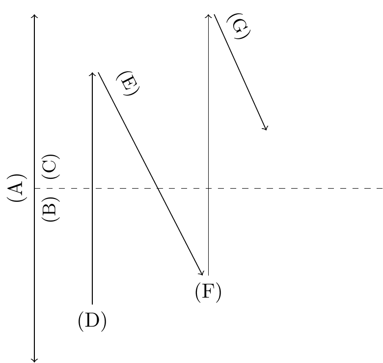
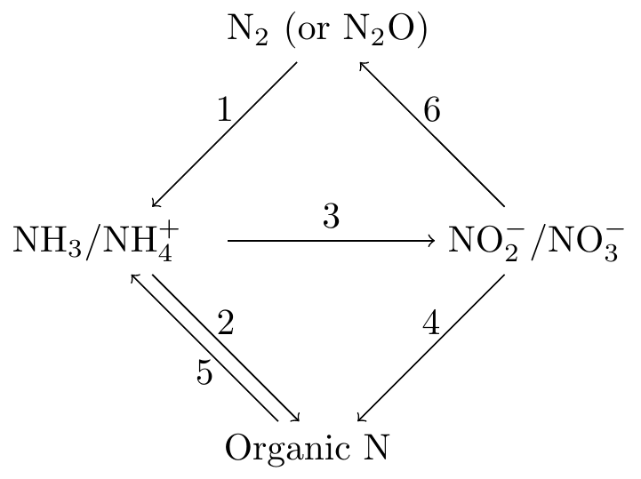

Thermodynamics
Entropy
How many possible microstates are there when flipping 10 coins?
n <- 2 # number of options (heads or tails)
k <- 10 # number of items (number of coins)
microstates <- n^k
print(microstates)The number of microstates for a particular macrostate is given as: \(\binom{n}{x} = \frac{n!}{x!(n-x)!}\), where \(n\) is the number of coins and \(x\) is the number of times you receive heads. The term \(\binom{n}{x}\) is read “\(n\) choose \(x\)”. Assuming you have 20 coins, how many microstates are there for receiving 10 times heads?
n <- 20
x <- 10
factorial(___)n <- 20 # number of coins
x <- 10 # number of heads (or tails)
answer <- factorial(n) / (factorial(x) * factorial(n - x))
print(answer)How many microstates are there for receiving 5 times heads when flipping 20 coins?
n <- 20 # number of coins
x <- 5 # number of heads (or tails)
answer <- factorial(n) / (factorial(x) * factorial(n - x))
print(answer)How much more likely is it to receive 10 compared to 5 times heads when flipping 20 coins?
answer <- 184756/15504
print(answer)Consider a sample of ice with a mass of 3 kg that melts at a constant temperature of about 273.15K. Calculate the corresponding change in entropy. Assume that the energy required for melting (i.e. the heat of fusion) equals 3.34 x 105 J/kg.
T <- ___ # temperature (K)
ice.mass <- ___ # ice mass (kg)
Lf <- ___ # heat of fusion (J/kg)
# Heat added to melt ice
dQ <- ___
# Change in entropy
dS <- ___
print(dS)T <- 273.15 # temperature (K)
ice.mass <- 3 # ice mass (kg)
Lf <- 3.34 * 10^5 # heat of fusion (J/kg)
# Heat added to melt ice
dQ <- Lf * ice.mass # J
# Change in entropy
dS <- dQ / T # J/K
print(dS)Consider a sample of water with a volume of 1 cm3 that is boiled at constant atmospheric surface pressure of 101300 Pa. The resulting steam occupies a volume of 1500 cm3. Calculate the change in internal energy. Assume that the latent heat of vaporization equals 2.256 x 106 J kg-1.
# Constants
Lv <- ___ # latent heat of vaporization (J/kg)
rho <- ___ # water density (kg/m3)
# Inputs
p <- ___ # pressure (Pa)
V1 <- ___ # volume (m3)
V2 <- ___ # volume (m3)
# Work done by the water when it vaporizes (J)
dW <- ___
# Water mass (kg)
m <- ___
# Heat added to the water (J)
dQ <- ___
# Change in internal energy (J)
dU <- ___
print(dU)# Constants
Lv <- 2.256 * 10^6 # latent heat of vaporization (J/kg)
rho <- 1000 # water density (kg/m3)
# Inputs
p <- 101300 # pressure (Pa)
V1 <- 1/1000000 # volume (m3)
V2 <- 1500/1000000 # volume (m3)
# Work done by the water when it vaporizes (J)
dW <- p * (V2 - V1)
# Water mass (kg)
m <- V1 * rho
# Heat added to the water (J)
dQ <- m * Lv
# Change in internal energy (J)
dU <- dQ - dW
print(dU)Gibbs free energy
Under standard conditions, the oxidation of nitric oxide to nitrogen dioxide (2NO + O\(_2\) \(\rightarrow\) 2NO\(_2\)) causes a change in enthalpy by -114100 J and a change in entropy by -146.5 J/K. Calculated the associated change in Gibbs free energy for a temperature of 298.15 K.
dH <- -114100 # change in enthalpy (J)
dS <- -146.5 # change in entropy (J/K)
T <- 298.15 # Temperature (K)
dG <- dH - T * dS
print(dG)Chemical potential
The chemical potential can be defined as: \[\mu=\mu^{*}+RT \ln{c}+\bar{V}p+zF\phi_{E}+mgh\] Create a Figure that shows how term II varies as a function of mole fraction (x-axis) for a range of temperatures (different lines). Allow the mole fraction to range between 0.1 and 1.0 (-) and temperature to range from 280 to 320 K.
# constants
R <- 8.314 # universal gas constant (J K–1 mol–1)
# variables
c_min <- ___ # concentration of solutes (mol m–3)
c_max <- ___ # concentration of solutes (mol m–3)
c <- seq(c_min, c_max, 0.01)
T_min <- ___ # absolute temperature (K)
T_max <- ___ # absolute temperature (K)
T <- seq(T_min, T_max, 10) # temperature (K)
my.fun <- function(c, T){
y <- ___
print(y)
}
data <- outer(c, T, my.fun)
my.xlab <- "Mole fraction (-)"
my.ylab <- "Chemical Potential (J mol$^{-1}$)"
my.xlab <- latex2exp::TeX(my.xlab)
my.ylab <- latex2exp::TeX(my.ylab)
my.col <- viridis::plasma(n = ncol(data))
matplot(x = c, y = data, type = "l", lty = 1, col = my.col,
xlab = my.xlab, ylab = my.ylab)
legend.text <- paste(T, "T", sep = " ")
legend("bottomright", legend = legend.text, pch = 16, col = my.col, bty = "n")# constants
R <- 8.314 # universal gas constant (J K–1 mol–1)
# variables
c_min <- 0.1 # concentration of solutes (mol m–3)
c_max <- 1 # concentration of solutes (mol m–3)
c <- seq(c_min, c_max, 0.01)
T_min <- 280 # absolute temperature (K)
T_max <- 320 # absolute temperature (K)
T <- seq(T_min, T_max, 10) # temperature (K)
my.fun <- function(c, T){
y <- R * T * log(c)
print(y)
}
data <- outer(c, T, my.fun)
my.xlab <- "Mole fraction (-)"
my.ylab <- "Chemical Potential (J mol$^{-1}$)"
my.xlab <- latex2exp::TeX(my.xlab)
my.ylab <- latex2exp::TeX(my.ylab)
my.col <- viridis::plasma(n = ncol(data))
matplot(x = c, y = data, type = "l", lty = 1, col = my.col,
xlab = my.xlab, ylab = my.ylab)
legend.text <- paste(T, "T", sep = " ")
legend("bottomright", legend = legend.text, pch = 16, col = my.col, bty = "n")Create a bar plot that compares the chemical potential of water in a root and in a branch of a tree. Show the chemical potential of each term as well as their totals. Assume the following environmental conditions:
- Absolute temperature: 295 K
- Water mole fraction: 0.999 (-)
- Absolute minus atmospheric pressure in root: -0.1 x 105
Pa
- Absolute minus atmospheric pressure in stem: -3.0 x 105 Pa
- Root depth: 0.5 m below ground
- Branch height: 10 m above ground
# constants
R <- ___ # universal gas constant (J K–1 mol–1)
g <- ___ # gravitational acceleration (m s-2)
# variables
T <- ___ # absolute temperature (K)
c <- ___ # mole fraction (-)
V <- ___ # partial molal volume (m3 mol-1)
m <- ___ # molar mass (kg mol-1)
# root
p <- ___ # absolute minus atmospheric pressure (Pa)
h <- ___ # height above ground (m)
activity <- ___
pressure <- ___
height <- ___
total <- ___
chemPot.root <- c(activity, pressure, height, total)
# branch
p <- ___ # absolute minus atmospheric pressure (Pa)
h <- ___ # height above ground (m)
activity <- ___
pressure <- ___
height <- ___
total <- ___
chemPot.branch <- c(activity, pressure, height, total)
data <- cbind(chemPot.root, chemPot.branch)
rownames(data) <- c("activity", "pressure", "height", "total")
colnames(data) <- c("root","branch")
my.ylab <- "Chemical potential of water (J/mol)"
barplot(data, ylim = c(-8, 5), ylab = my.ylab, beside=TRUE, legend = TRUE, args.legend = c(x="top", horiz = TRUE, bty = 'n'))# constants
R <- 8.314 # universal gas constant (J K–1 mol–1)
g <- 9.82 # gravitational acceleration (m s-2)
# variables
T <- 295 # absolute temperature (K)
c <- 0.999 # mole fraction (-)
V <- 18 * 10^{-6} # partial molal volume (m3 mol-1)
m <- 10 * 10^{-3} # molar mass (kg mol-1)
# root
p <- -0.1 * 100000 # absolute minus atmospheric pressure (Pa)
h <- -0.5 # height above ground (m)
activity <- R * T * log(c)
pressure <- V * p
height <- m * g * h
total <- activity + pressure + height
chemPot.root <- c(activity, pressure, height, total)
# branch
p <- -3 * 100000 # absolute minus atmospheric pressure (Pa)
h <- 10 # height above ground (m)
activity <- R * T * log(c)
pressure <- V * p
height <- m * g * h
total <- activity + pressure + height
chemPot.branch <- c(activity, pressure, height, total)
data <- cbind(chemPot.root, chemPot.branch)
rownames(data) <- c("activity", "pressure", "height", "total")
colnames(data) <- c("root","branch")
my.ylab <- "Chemical potential of water (J/mol)"
barplot(data, ylim = c(-8, 5), ylab = my.ylab, beside=TRUE, legend = TRUE, args.legend = c(x="top", horiz = TRUE, bty = 'n'))Water potential
The water potential can be defined as: \[ \Psi_{w}=\Psi_{\pi}+\Psi_{p}+\Psi_{g}+\Psi_{m}\]
Chemical Reactions
Reaction kinetics
Consider the following reaction: \[v=k[A][B][C]^2\]
Consider the reaction: \[ CO_2+H_2\underset{\text{k$_2$}}{\overset{\text{k$_1$}}{\rightleftarrows}}CO+H_2O \] The reaction is in equilibrium and the concentrations of the reactants and products are 0.0954 moles/l of CO\(_2\), 0.0454 moles/l of H\(_2\), 0.0046 moles/l of CO, and 0.0046 moles/l of H\(_2\)O. Calculate the value of the equilibrium constant.
CO2 <- 0.0954
H2 <- 0.0454
CO <- 0.0046
H2O <- 0.0046
Ke <- (CO * H2O) / (CO2 * H2)
print(Ke)The energetics of chemical reactions
Show how the fraction of nitrogen gas molecules of a given speed changes when the temperature increases from 300 to 500 K. Recall that the Maxwell-Boltzmann energy distribution is given as:
\[ F_c(c) = 4 \pi c^2 \left( \frac{m}{2 \pi k_B T} \right)^{\frac{3}{2}} \exp{\frac{-m c^2}{2 k_B T}} \] Where \(c\) is the speed of a molecule (m s\(^{-1}\)), \(m\) is the mass of a single molecule (kg) and \(k_B\) is the Boltzmann constant (\(k_B = 1.38 \times 10^{-23}\) J K\(^{-1}\))
# constants
Avogadro <- 6.02 * 10^(23) # particles per mol
kB <- 1.38 * 10^(-23) # Boltzmann constant (J/K)
# inputs
molarMass <- ___ # molar mass of N2 in g/mol
T <- ___ # temperature in K
c <- ___ # speed in m/s
m <- ___ # mass of a N2 molecule in kg
my.fun <- function(c, T){
# Fraction of molecules with a given speed
y <- ___
return(y)
}
data <- outer(c, T, my.fun)
my.xlab <- "Molecular speed $c$ in m s$^{-1}$"
my.ylab <- "Fraction of molecules (-)"
my.xlab <- latex2exp::TeX(my.xlab)
my.col <- viridis::plasma(n = ncol(data))
matplot(x = ___, y = ___, type = "l", lty = 1, col = my.col,
xlab = my.xlab, ylab = my.ylab)
legend.text <- paste("T =", T, "K", sep = " ")
legend("topright", legend = legend.text, pch = 16, col = my.col, bty = "n")# constants
Avogadro <- 6.02 * 10^(23) # particles per mol
kB <- 1.38 * 10^(-23) # Boltzmann constant (J/K)
# inputs
molarMass <- 28.014 # molar mass of N2 in g/mol
T <- seq(300, 500, 100) # temperature in K
c <- seq(1, 1501, 10) # speed in m/s
m <- molarMass / Avogadro / 1000 # mass of a N2 molecule in kg
my.fun <- function(c, T){
# Fraction of molecules with a given speed
y <- 4 * pi * c^2 * (m / (2 * pi * kB * T))^(3/2) * exp( -1 * m * c^2 / (2 * kB * T))
return(y)
}
data <- outer(c, T, my.fun)
my.xlab <- "Molecular speed $c$ in m s$^{-1}$"
my.ylab <- "Fraction of molecules (-)"
my.xlab <- latex2exp::TeX(my.xlab)
my.col <- viridis::plasma(n = ncol(data))
matplot(x = c, y = data, type = "l", lty = 1, col = my.col,
xlab = my.xlab, ylab = my.ylab)
legend.text <- paste("T =", T, "K", sep = " ")
legend("topright", legend = legend.text, pch = 16, col = my.col, bty = "n")# constants
Avogadro <- 6.02 * 10^(23) # particles per mol
kB <- 1.38 * 10^(-23) # Boltzmann constant (J/K)
# inputs
molarMass <- 28.014 # molar mass of N2 in g/mol
T <- seq(300, 500, 100) # temperature in K
c <- seq(1, 1501, 10) # speed in m/s
m <- molarMass / Avogadro / 1000 # mass of a N2 molecule in kg
kineticEnergy <- 0.5 * m * c^2 # kinetic energy
my.fun <- function(c, T){
# Fraction of molecules with a given speed
y <- 4 * pi * c^2 * (m / (2 * pi * kB * T))^(3/2) * exp( -1 * m * c^2 / (2 * kB * T))
return(y)
}
data <- outer(c, T, my.fun)
my.xlab <- "Kinetic Energy $E$ (J)"
my.ylab <- "Fraction of molecules (-)"
my.xlab <- latex2exp::TeX(my.xlab)
my.col <- viridis::plasma(n = ncol(data))
matplot(x = kineticEnergy, y = data, type = "l", lty = 1, col = my.col,
xlab = my.xlab, ylab = my.ylab)
legend.text <- paste("T =", T, "K", sep = " ")
legend("topright", legend = legend.text, pch = 16, col = my.col, bty = "n")Make a Figure that shows how the rate constant \(k\) varies with temperature for different values of activation energy. Allow temperatures to vary between 270K and 320K and activation energy to range from 50 to 55 kJ mol-1. Assume a frequency factor of \(C = 10^{10}\) mol\(^{-1}\) l s\(^{-1}\).
# constants
R <- 8.314 # universal gas constant in J mol-1 K-1
# variables
Ea <- ___ # activation energy in kJ/mol
T <- ___ # temperature in K
C <- ___ # frequency factor
my.fun <- function(T, Ea){
y <- ___ # Arrhenius equation
return(y)
}
data <- outer(___)
my.xlab <- "Temperature (K)"
my.ylab <- "Reaction rate constant k (mol$^{-1}$ l s$^{-1}$)"
my.ylab <- latex2exp::TeX(my.ylab)
my.col <- viridis::plasma(n = ncol(data))
matplot(x = T, y = data, type = "l", lty = 1, col = my.col,
xlab = my.xlab, ylab = my.ylab)
legend.text <- paste("Ea =", Ea, "kJ/mol", sep = " ")
legend("topleft", legend = legend.text, pch = 16, col = my.col, bty = "n")# constants
R <- 8.314 # universal gas constant in J mol-1 K-1
# variables
Ea <- seq(50, 55, 1) # activation energy in kJ/mol
T <- seq(270, 320, 1) # temperature in K
C <- 10^10 # frequency factor
my.fun <- function(T, Ea){
y <- C * exp(-1 * Ea * 1000 / (R * T)) # Arrhenius equation
return(y)
}
data <- outer(T, Ea, my.fun)
my.xlab <- "Temperature (K)"
my.ylab <- "Reaction rate constant k (mol$^{-1}$ l s$^{-1}$)"
my.ylab <- latex2exp::TeX(my.ylab)
my.col <- viridis::plasma(n = ncol(data))
matplot(x = T, y = data, type = "l", lty = 1, col = my.col,
xlab = my.xlab, ylab = my.ylab)
legend.text <- paste("Ea =", Ea, "kJ/mol", sep = " ")
legend("topleft", legend = legend.text, pch = 16, col = my.col, bty = "n")# constants
R <- 8.314 # universal gas constant in J mol-1 K-1
# variables
Ea <- ___ # activation energy in kJ/mol
T1 <- ___ # temperature in K
T2 <- ___ # temperature in K
C <- ___
k1 <- ___
k2 <-___
my.xlab <- latex2exp::TeX("Temperature T$_1$ (K)")
my.ylab <- latex2exp::TeX("$k_2 / k_1$")
plot(___, ___, type = "l", xlab = my.xlab, ylab = my.ylab,
tcl = 0.3)
abline(h = 2, lty = 3)
abline(v = 290, lty = 3)# constants
R <- 8.314 # universal gas constant in J mol-1 K-1
# variables
Ea <- 50 # activation energy in kJ/mol
T1 <- seq(270, 320, 1) # temperature in K
T2 <- T1 + 10
C <- 1
k1 <- C * exp(-1 * Ea * 1000 / (R * T1))
k2 <- C * exp(-1 * Ea * 1000 / (R * T2))
my.xlab <- latex2exp::TeX("Temperature T$_1$ (K)")
my.ylab <- latex2exp::TeX("$k_2 / k_1$")
plot(T1, k2/k1, type = "l", xlab = my.xlab, ylab = my.ylab,
tcl = 0.3)
abline(h = 2, lty = 3)
abline(v = 290, lty = 3)Redox reaction
Consider the following redox reaction: \[ SO_3^{2-} + MnO_4^- \rightarrow SO_4^{2-}+Mn^{2+}\]
Consider the following redox couples and their corresponding standard reduction potentials (\(E^o\)): \[Cu^{2+} + 2e^- \rightarrow Cu; E^o = +0.340V\] \[Zn^{2+} + 2e^- \rightarrow Zn; E^o = -0.763V\]
Enzyme catalysis
Create a Figure that shows how the reaction rate varies with substrate concetration (ranging from 0 to 5000 \(\mu\)mol/l) for various Michaelis constants (ranging from 500 to 1000). Assume a maximum reaction rate of 50 x 10\(^{-6}\) mol l\(^{-1}\) s\(^{-1}\).
# inputs
Vmax <- ___ # maximum reaction rate (x 10^-6 mol l-1 s-1)
Km <- ___ # equillibrium constant
S <- ___ # substrate in micro mol/l
my.fun <- function(S, Km){
y <- ___ # reaction rate
return(y)
}
myColName <- paste("K_m = ",Km," (10$^{-6}$ mol l$^{-1}$)", sep = "")
data <- outer(S, Km, my.fun)
my.xlab <- "Substrate concentration S (10$^{-6}$ mol l$^{-1}$)"
my.ylab <- "Reaction rate v (10$^{-6}$ mol l$^{-1}$ s$^{-1}$)"
my.xlab <- latex2exp::TeX(my.xlab)
my.ylab <- latex2exp::TeX(my.ylab)
my.col <- viridis::plasma(n = ncol(data))
matplot(x = S, y = data, type = "l", lty = 1, col = my.col,
xlab = my.xlab, ylab = my.ylab)
legend.text <- paste("K$_m$ = ",Km," (10$^{-6}$ mol l$^{-1}$)", sep = "")
legend.text <- latex2exp::TeX(legend.text)
legend("bottomright", legend = legend.text, pch = 16, col = my.col, bty = "n")# inputs
Vmax <- 50 # maximum reaction rate (x 10^-6 mol l-1 s-1)
Km <- seq(500, 1000, 250)
S <- seq(0, 5000, 10) # substrate in micro mol/l
my.fun <- function(S, Km){
y <- Vmax * S / (Km + S) # reaction rate
return(y)
}
myColName <- paste("K_m = ",Km," (10$^{-6}$ mol l$^{-1}$)", sep = "")
data <- outer(S, Km, my.fun)
my.xlab <- "Substrate concentration S (10$^{-6}$ mol l$^{-1}$)"
my.ylab <- "Reaction rate v (10$^{-6}$ mol l$^{-1}$ s$^{-1}$)"
my.xlab <- latex2exp::TeX(my.xlab)
my.ylab <- latex2exp::TeX(my.ylab)
my.col <- viridis::plasma(n = ncol(data))
matplot(x = S, y = data, type = "l", lty = 1, col = my.col,
xlab = my.xlab, ylab = my.ylab)
legend.text <- paste("K$_m$ = ",Km," (10$^{-6}$ mol l$^{-1}$)", sep = "")
legend.text <- latex2exp::TeX(legend.text)
legend("bottomright", legend = legend.text, pch = 16, col = my.col, bty = "n")Control over metabolic fluxes
Photon-assimilation reaction

Consider the following redox pairs:
- oxidant + \(ne^- \rightarrow\) reductant ; standard reduction potential \(E^{\circ}\) (V)
- \(NADP^+ + H^+ + 2e^- \rightarrow NADPH\) ; \(E^{\circ} = -0.32V\)
- \(O_2 + 4H^+ + 4e^- \rightarrow 2 H_2O\) ; \(E^{\circ} = 0.82\)
How much energy does the light reaction need to produce for the transport of 2 moles of electrons from H2O to NADP+? Recall that the Faraday constant equals 96,494 C J-1
# standard reduction potentials in Volts:
E_acceptor <- -0.32
E_donor <- 0.82
dE <- E_acceptor - E_donor
n <- 2 # number of electrons (mol)
F <- 96494 # Faraday's constant (C/mol)
dG = -n * F * dE # change in Gibbs free energy (J)
return(dG)Reductive pentose phosphate (RPP) pathway
Sort the terms below in the order they appear in the text. For instance, the first term that should be moved to the top of the list is the word that corresponds to the first placeholder in the text.
Calculate the relative specificity of Rubisco activity for CO2 vs O2. Use the data given in the Table below (Jordan, D.B. and Ogren, W.L., 1984. The CO2/O2 specificity of ribulose 1,5-bisphosphate carboxylase/oxygenase: dependence on ribulosebisphosphate concentration, pH and temperature. Planta, 161, pp.308-313.)
| T (C) | Vc (\(\mu\)mol mg-1 min-1) | Kc (\(\mu\)M) | Ko (\(\mu\)M) | Vo (\(\mu\)mol mg-1 min-1) |
|---|---|---|---|---|
| 7 | 0.13 | 2 | 550 | 0.24 |
| 12 | 0.36 | 3 | 510 | 0.48 |
| 15 | 0.63 | 4 | 510 | 0.69 |
| 25 | 1.5 | 11 | 500 | 0.77 |
| 30 | 1.9 | 14 | 600 | 1.1 |
| 35 | 2.9 | 19 | 540 | 1.3 |
T <- c(7, 12, 15, 25, 30, 35)
Vc <- c(0.13, 0.36, 0.63, 1.5, 1.9, 2.9)
Kc <- c(2, 3, 4, 11, 14, 19)
Ko <- c(550, 510, 510, 500, 600, 540)
Vo <- c(0.24, 0.48, 0.69, 0.77, 1.1, 1.3)
# relative specificity of Rubisco activity for CO2 vs O2:
Srel <- ___
plot(x = ___, y = ___, xlab = "Temperature (Celsius)", ylab = "Relative Specificity (-)", type = "l")# inputs:
T <- c(7, 12, 15, 25, 30, 35)
Vc <- c(0.13, 0.36, 0.63, 1.5, 1.9, 2.9)
Kc <- c(2, 3, 4, 11, 14, 19)
Ko <- c(550, 510, 510, 500, 600, 540)
Vo <- c(0.24, 0.48, 0.69, 0.77, 1.1, 1.3)
# relative specificity of Rubisco activity for CO2 vs O2:
Srel <- (Vc * Ko) / (Vo * Kc)
plot(x = T, y = Srel, xlab = "Temperature (Celsius)", ylab = "Relative Specificity (-)", type = "l")Sort the terms below in the order they appear in the text. For instance, the first term that should be moved to the top of the list is the word that corresponds to the first placeholder in the text.
Respiration, C4 photosynthesis
Take pen and paper and make a drawing of how the individual carbon atoms convert from RuBP to PGA, PGL, and CO2 during photorespiration. Once you are done, explain your drawing to your neighbor. Use your drawing to find the answer to the question below.
Sort the terms below in the order they appear in the text. For instance, the first term that should be moved to the top of the list is the word that corresponds to the first placeholder in the text.
Modeling the metabolic CO2 flux
Equations and constants used in some of the exercises below
| Definition | Equation | Units |
|---|---|---|
| Net CO2 assimilation | \(A_n= (1 - \Gamma_*/c_{ic}) \min(v_{c1}, v_{c2}, v_{c3}) - R_d\) | \(\mu\)mol mol-1 |
| Rubisco-limited carboxylation rate | \(v_{c1}=\frac{V_{cmax}c_{ic}}{c_{ic}+K_c(1+c_{io}/K_o)}\) | \(\mu\)mol mol-1 |
| RuBP-limited carboxylation rate | \(v_{c2}=\frac{F_J c_{ic}}{4c_{ic}+8\Gamma_*}\) | \(\mu\)mol mol-1 |
| TPU-limited carboxylation rate | \(v_{c3} = 3 \textrm{TPU}\) | \(\mu\)mol mol-1 |
| Dark respiration | \(R_d = 0.015 \times V_{cmax}\) | \(\mu\)mol mol-1 |
| \(Q_{10}\) function | \(v=v_{25} \times Q_{10}^{(T-298.15)/10}\) | depends on \(v\) |
| High temperature inhibition | \(f_H(T_l) = \frac{1 + \exp\left( \frac{298.15 \Delta S - \Delta H_d}{298.15R} \right)}{1 + \exp \left( \frac{\Delta ST_l-\Delta H_d}{RT_l} \right)}\) | dimensionless |
| Variable | Value | Q10 | Unit |
|---|---|---|---|
| Vcmax | 50 | 2.21 | \(\mu\)mol m-2 s-1 |
| Kc | 404.9 | 2.93 | \(\mu\)mol mol-1 |
| Ko | 278.4 | 1.64 | mmol mol-1 |
| \(\Gamma_*\) | 42.75 | 1.67 | \(\mu\)mol mol-1 |
| FJmax | 100 | 1.80 | \(\mu\)mol m-2 s-1 |
| aL | 0.8 | NA | (-) |
| \(\beta\) | 0.5 | NA | (-) |
| TPU | 7.4 | NA | \(\mu\)mol m-2 s-1 |
| cic | 245 | NA | \(\mu\)mol mol-1 |
| cio | 210 | NA | mmol mol-1 |
| I | 500 | NA | \(\mu\)mol photons m-2 s-1 |
| Parameter | \(\Delta H_d\) (J mol\(^{-1}\)) | \(\Delta S\) (J K\(^{-1}\)) mol\(^{-1}\) |
|---|---|---|
| Vcmax | 149,250 | 485 |
| Jmax | 152,040 | 495 |
Rubisco-limited state
Consider the following equation: \(v_{c1}=\frac{V_{cmax}c_{ic}}{c_{ic}+K_c(1+c_{io}/K_o)}\)
Make a figure that shows how the Rubisco-limited carboxylation rate varies with inter-cellular CO\(_2\) concentration (\(c_{ic}\)) using the equations and constants provided in Tables 1-3 above. Let \(c_{ic}\) range from 0 to 1000 \(\mu\)mol mol\(^{-1}\)) and assume a leaf temperature of 25\(^{\circ}\)C.
# Constants
V_cmax <- ___ # maximum carboxylation rate in mol CO2 m-2 s-1
Kc <- ___ # Michaelis-Menten coefficient for CO2 for C3 Rubisco (mol mol-1)
Ko <- ___ # Michaelis-Menten coefficient for O2 for C3 Rubisco (mol mol-1)
c_io <- ___ # inter-cellular O2 concentration (mol mol-1)
# Independent variables
c_ic <- ___ # inter-cellular CO2 concentration (mol mol-1)
# Rubisco-limited state
vc1 <- ___
my.xlab <- latex2exp::TeX("$c_{ic}$ ($\\mu$mol mol$^{-1}$)")
my.ylab <- latex2exp::TeX("$v_{c1}$ ($\\mu$mol m$^{-2}$ s$^{-1}$)")
par(mar = c(5,5,1,1))
plot(x = ___, y = ___, xlab = my.xlab, ylab = my.ylab, type = "l")rm(list=ls())
# Constants:
V_cmax <- 50 * 10^-6 # maximum carboxylation rate in mol CO2 m-2 s-1
Kc <- 404.9 * 10^-6 # # Michaelis-Menten coefficient for CO2 for C3 Rubisco (mol mol-1)
Ko <- 278.4 * 10^-3 # Michaelis-Menten coefficient for O2 for C3 Rubisco (mol mol-1)
c_io <- 210 * 10^-3 # inter-cellular O2 concentration (mol mol-1)
# Independent variables:
c_ic <- seq(0,1000, 10) * 10^-6 # inter-cellular CO2 concentration (mol mol-1)
# Rubisco-limited state
vc1 <- (V_cmax * c_ic) / (c_ic + Kc * (1 + c_io / Ko))
my.xlab <- latex2exp::TeX("$c_{ic}$ ($\\mu$mol mol$^{-1}$)")
my.ylab <- latex2exp::TeX("$v_{c1}$ ($\\mu$mol m$^{-2}$ s$^{-1}$)")
par(mar = c(5,5,1,1))
plot(x = c_ic * 10^6, y = vc1 * 10^6, xlab = my.xlab, ylab = my.ylab, type = "l")RuBP-limited state
Make a figure that shows how the RuBP-limited carboxylation rate varies with inter-cellular CO\(_2\) concentration (\(c_{ic}\)) using the equations and constants provided in Tables 1-3 above. Let \(c_{ic}\) range from 0 to 1000 \(\mu\)mol mol\(^{-1}\)) and assume a leaf temperature of 25\(^{\circ}\)C.
# Constants:
Gamma <- ___ # photocompensation point (mol mol-1)
FJmax <- ___ # maximum possible electron transport rate (mol m-2 s-1)
aL <- ___ # fractional absortance of the leaf (-)
beta <- ___ # fraction of absorbed light that reaches PSII (-)
# Independent variables:
T <- ___ # leaf temperature (C)
c_ic <- ___ # inter-cellular CO2 concentration (mol mol-1)
I <- ___ # PPFD (mol photons m-2 leaf area s-1)
# RuBP-limited state
phi_PSIImax <- ___
Theta <- ___
I2 <- ___
FJ <- ___
vc2 <- ___
my.xlab <- latex2exp::TeX("$c_{ic}$ ($\\mu$mol mol$^{-1}$)")
my.ylab <- latex2exp::TeX("$v_{c2}$ ($\\mu$mol m$^{-2}$ s$^{-1}$)")
par(mar = c(5,5,1,1))
plot(x = ___, y = ___, xlab = my.xlab, ylab = my.ylab, type = "l")rm(list=ls())
# Constants:
Gamma <- 42.75 * 10^-6 # photocompensation point (mol mol-1)
FJmax <- 100 * 10^-6 # maximum possible electron transport rate (mol m-2 s-1)
aL <- 0.8 # fractional absortance of the leaf (-)
beta <- 0.5 # fraction of absorbed light that reaches PSII (-)
# Independent variables:
T <- 25 # leaf temperature (C)
c_ic <- seq(0,1000, 10) * 10^-6 # inter-cellular CO2 concentration (mol mol-1)
# c_io <- 210 * 10^-3 # inter-cellular O2 concentration (mol mol-1)
I <- 500 * 10^-6 # PPFD (mol photons m-2 leaf area s-1)
# RuBP-limited state
phi_PSIImax <- 0.352 + 0.022 * T - 3.4 * 10^(-4) * T^2
Theta <- 0.76 + 0.018 * T - 3.4 * 10^(-4) * T^2
I2 <- I * aL * phi_PSIImax * beta
FJ <- (I2 + FJmax - ((I2 + FJmax)^2 - 4 * Theta * I2 * FJmax)^0.5) / (2 * Theta)
vc2 <- FJ * c_ic / (4 * c_ic + 8 * Gamma)
my.xlab <- latex2exp::TeX("$c_{ic}$ ($\\mu$mol mol$^{-1}$)")
my.ylab <- latex2exp::TeX("$v_{c2}$ ($\\mu$mol m$^{-2}$ s$^{-1}$)")
par(mar = c(5,5,1,1))
plot(x = c_ic * 10^6, y = vc2 * 10^6, xlab = my.xlab, ylab = my.ylab, type = "l")TPU-limited state
Make a figure that shows how the Rubisco, RuBP, and TPU-limited carboxylation rate varies with inter-cellular CO\(_2\) concentration (\(c_{ic}\)) using the equations and constants provided in Tables 1-3 above. Let \(c_{ic}\) range from 0 to 1000 \(\mu\)mol mol\(^{-1}\)) and assume a leaf temperature of 25\(^{\circ}\)C.
# Constants:
# Independent variables:
# Rubisco-limited state
vc1 <- ___
# RuBP-limited state
phi_PSIImax <- ___
Theta <- ___
I2 <- ___
FJ <- ___
vc2 <- ___
# TPU-limited state
vc3 <- ___
my.xlab <- latex2exp::TeX("$c_{ic}$ ($\\mu$mol mol$^{-1}$)")
my.ylab <- latex2exp::TeX("$v$ ($\\mu$mol m$^{-2}$ s$^{-1}$)")
par(mar = c(5,5,1,1))
my.col <- viridis::plasma(n = 3)
plot(x = c_ic * 10^6, y = vc1 * 10^6, xlab = my.xlab, ylab = my.ylab, type = "l", col = my.col[1])
lines(x = c_ic * 10^6, y = vc2 * 10^6, col = my.col[2])
abline(h = vc3 * 10^6, col = my.col[3])
legend("bottomright", c("Rubisco-limited", "RuBP-limited", "TPU-limited"), col = my.col, pch = 16, bty = "n")rm(list=ls())
# Constants
V_cmax <- 50 * 10^-6 # maximum carboxylation rate in mol CO2 m-2 s-1
Kc <- 404.9 * 10^-6 # # Michaelis-Menten coefficient for CO2 for C3 Rubisco (mol mol-1)
Ko <- 278.4 * 10^-3 # Michaelis-Menten coefficient for O2 for C3 Rubisco (mol mol-1)
Gamma <- 42.75 * 10^-6 # photocompensation point (mol mol-1)
FJmax <- 100 * 10^-6 # maximum possible electron transport rate (mol m-2 s-1)
aL <- 0.8 # fractional absortance of the leaf (-)
beta <- 0.5 # fraction of absorbed light that reaches PSII (-)
TPU <- 7.4*10^-6 # Triose-phosphate utilization rate (mol CO2 m-2 s-1)
# Independent variables
T <- 25
c_ic <- seq(0,1000, 10) * 10^-6 # inter-cellular CO2 concentration (mol mol-1)
c_io <- 210 * 10^-3 # inter-cellular O2 concentration (mol mol-1)
I <- 500 * 10^-6 # PPFD (mol photons m-2 leaf area s-1)
# Rubisco-limited state
vc1 <- (V_cmax * c_ic) / (c_ic + Kc * (1 + c_io / Ko))
# RuBP-limited state
phi_PSIImax <- 0.352 + 0.022 * T - 3.4 * 10^(-4) * T^2
Theta <- 0.76 + 0.018 * T - 3.4 * 10^(-4) * T^2
I2 <- I * aL * phi_PSIImax * beta
FJ <- (I2 + FJmax - ((I2 + FJmax)^2 - 4 * Theta * I2 * FJmax)^0.5) / (2 * Theta)
vc2 <- FJ * c_ic / (4 * c_ic + 8 * Gamma)
# TPU-limited state
vc3 <- 3 * TPU
my.xlab <- latex2exp::TeX("$c_{ic}$ ($\\mu$mol mol$^{-1}$)")
my.ylab <- latex2exp::TeX("$v$ ($\\mu$mol m$^{-2}$ s$^{-1}$)")
par(mar = c(5,5,1,1))
my.col <- viridis::plasma(n = 3)
plot(x = c_ic * 10^6, y = vc1 * 10^6, xlab = my.xlab, ylab = my.ylab, type = "l", col = my.col[1])
lines(x = c_ic * 10^6, y = vc2 * 10^6, col = my.col[2])
abline(h = vc3 * 10^6, col = my.col[3])
legend("bottomright", c("Rubisco-limited", "RuBP-limited", "TPU-limited"), col = my.col, pch = 16, bty = "n")Make a figure that shows how the net CO\(_2\) assimilation rate (\(A_n\)) varies with inter-cellular CO\(_2\) concentration (\(c_{ic}\)) using the equations and constants
provided in Tables 1-3 above. Let \(c_{ic}\) range from 0 to 1000 \(\mu\)mol mol\(^{-1}\)) and assume a leaf temperature of
25\(^{\circ}\)C. Use
pmin(vc1, vc2, vc3) to compute the minimum of the three
photosynthetic states:
# Constants
# Independent variables
# Rubisco-limited state
vc1 <- ___
# RuBP-limited state
vc2 <-___
# TPU-limited state
vc3 <- ___
# Rd
Rd <- ___
# An
An <- ___
my.xlab <- latex2exp::TeX("$c_{ic}$ ($\\mu$mol mol$^{-1}$)")
my.ylab <- latex2exp::TeX("$A_n$ ($\\mu$mol m$^{-2}$ s$^{-1}$)")
par(mar = c(5,5,1,1))
plot(x = c_ic * 10^6, y = An * 10^6, xlab = my.xlab, ylab = my.ylab, type = "l")rm(list=ls())
# Constants
V_cmax <- 50 * 10^-6 # maximum carboxylation rate in mol CO2 m-2 s-1
Kc <- 404.9 * 10^-6 # # Michaelis-Menten coefficient for CO2 for C3 Rubisco (mol mol-1)
Ko <- 278.4 * 10^-3 # Michaelis-Menten coefficient for O2 for C3 Rubisco (mol mol-1)
Gamma <- 42.75 * 10^-6 # photocompensation point (mol mol-1)
FJmax <- 100 * 10^-6 # maximum possible electron transport rate (mol m-2 s-1)
aL <- 0.8 # fractional absortance of the leaf (-)
beta <- 0.5 # fraction of absorbed light that reaches PSII (-)
TPU <- 7.4*10^-6 # Triose-phosphate utilization rate (mol CO2 m-2 s-1)
# Independent variables
T <- 25
c_ic <- seq(0,1000, 10) * 10^-6 # inter-cellular CO2 concentration (mol mol-1)
c_io <- 210 * 10^-3 # inter-cellular O2 concentration (mol mol-1)
I <- 500 * 10^-6 # PPFD (mol photons m-2 leaf area s-1)
# Rubisco-limited state
vc1 <- (V_cmax * c_ic) / (c_ic + Kc * (1 + c_io / Ko))
# RuBP-limited state
phi_PSIImax <- 0.352 + 0.022 * T - 3.4 * 10^(-4) * T^2
Theta <- 0.76 + 0.018 * T - 3.4 * 10^(-4) * T^2
I2 <- I * aL * phi_PSIImax * beta
FJ <- (I2 + FJmax - ((I2 + FJmax)^2 - 4 * Theta * I2 * FJmax)^0.5) / (2 * Theta)
vc2 <- FJ * c_ic / (4 * c_ic + 8 * Gamma)
# TPU-limited state
vc3 <- 3 * TPU
# Rd
Rd <- 0.015 * V_cmax
# An
An <- (1 - Gamma / c_ic) * pmin(vc1, vc2, vc3) - Rd
my.xlab <- latex2exp::TeX("$c_{ic}$ ($\\mu$mol mol$^{-1}$)")
my.ylab <- latex2exp::TeX("$A_n$ ($\\mu$mol m$^{-2}$ s$^{-1}$)")
par(mar = c(5,5,1,1))
plot(x = c_ic * 10^6, y = An * 10^6, xlab = my.xlab, ylab = my.ylab, type = "l")Net CO2 assimilation rate and its dependence on temperature
Make a figure that shows how \(K_c\) varies with temperature using the equations and constants provided in Tables 1-3 above. Let temperature range from 0 to 50 \(^{\circ}\)C.
# Function
fun.Q10 <- function(Q10, T){
y <- Q10^((T-25)/10)
return(y)
}
Kc <- ___ # Michaelis-Menten coefficient for CO2 for C3 Rubisco (mol mol-1)
Q10.Kc <- ___
# Independent variable
T <- seq(0, 50, 1)
# Adjust Kc for temperature
Kc <- ___ * fun.Q10(Q10.Kc, ___)
par(mar = c(5,5,1,1))
my.xlab <- latex2exp::TeX("Leaf temperature ($^{o}$C)")
my.ylab <- latex2exp::TeX("$K_c$ ($\\mu$mol mol$^{-1}$")
plot(x = T, y = Kc * 10^6, xlab = my.xlab, ylab = my.ylab, type = "l")rm(list=ls())
# Function
fun.Q10 <- function(Q10, T){
y <- Q10^((T-25)/10)
return(y)
}
Kc <- 404.9 * 10^-6 # Michaelis-Menten coefficient for CO2 for C3 Rubisco (mol mol-1)
Q10.Kc <- 2.93
# Independent variable
T <- seq(0, 50, 1)
# Adjust Kc for temperature
Kc <- Kc * fun.Q10(Q10.Kc, T)
par(mar = c(5,5,1,1))
my.xlab <- latex2exp::TeX("Leaf temperature ($^{o}$C)")
my.ylab <- latex2exp::TeX("$K_c$ ($\\mu$mol mol$^{-1}$")
plot(x = T, y = Kc * 10^6, xlab = my.xlab, ylab = my.ylab, type = "l")Make a figure that shows how \(V_{cmax}\) varies with temperature using the equations and constants provided in Tables 1-3 above. Let temperature range from 0 to 50 \(^{\circ}\)C.
# Function
fun.Q10 <- function(Q10, T){
y <- Q10^((T-25)/10)
return(y)
}
fun.thermalBreakdown <- function(deltaS, deltaHd, T){
R <- 8.31447 # Gas constant (J K-1 mol-1)
TK <- T + 273.15
a <- 298.15 * deltaS - deltaHd
b <- 298.15 * R
c <- deltaS * TK - deltaHd
d <- R * TK
numerator <- 1 + exp(a / b)
denominator <- 1 + exp(c / d)
thermalBreakdown <- numerator / denominator
return(thermalBreakdown)
}
# Constants:
deltaS.V_cmax <- ___ # entropy term (J K-1 mol-1)
deltaHd.V_cmax <- ___ # energy of deactivation (J mol-1)
V_cmax <- ___ # maximum carboxylation rate in mol CO2 m-2 s-1
Q10.V_cmax <- ___ # Q10 for V_cmax
# Independent variable:
T <- ___
# Adjust Vcmax for temperature
V_cmax <- ___ * fun.Q10(Q10.V_cmax, ___) * fun.thermalBreakdown(deltaS.V_cmax, deltaHd.V_cmax, ___)
par(mar = c(5,5,1,1))
my.xlab <- latex2exp::TeX("Leaf temperature ($^{o}$C)")
my.ylab <- latex2exp::TeX("$V_{cmax}$ ($\\mu$mol m$^{-2}$ s$^{-1}$)")
plot(x = T, y = V_cmax * 10^6, xlab = my.xlab, ylab = my.ylab, type = "l")rm(list=ls())
# Functions:
fun.Q10 <- function(Q10, T){
y <- Q10^((T-25)/10)
return(y)
}
fun.thermalBreakdown <- function(deltaS, deltaHd, T){
R <- 8.31447 # Gas constant (J K-1 mol-1)
TK <- T + 273.15
a <- 298.15 * deltaS - deltaHd
b <- 298.15 * R
c <- deltaS * TK - deltaHd
d <- R * TK
numerator <- 1 + exp(a / b)
denominator <- 1 + exp(c / d)
thermalBreakdown <- numerator / denominator
return(thermalBreakdown)
}
# Constants:
deltaS.V_cmax <- 485 # entropy term (J K-1 mol-1)
deltaHd.V_cmax <- 149250 # energy of deactivation (J mol-1)
V_cmax <- 50 * 10^-6 # maximum carboxylation rate in mol CO2 m-2 s-1
Q10.V_cmax <- 2.21 # Q10 for V_cmax
# Independent variable:
T <- seq(0, 50, 1)
# Adjust Vcmax for temperature
V_cmax <- V_cmax * fun.Q10(Q10.V_cmax, T) * fun.thermalBreakdown(deltaS.V_cmax, deltaHd.V_cmax, T)
par(mar = c(5,5,1,1))
my.xlab <- latex2exp::TeX("Leaf temperature ($^{o}$C)")
my.ylab <- latex2exp::TeX("$V_{cmax}$ ($\\mu$mol m$^{-2}$ s$^{-1}$)")
plot(x = T, y = V_cmax * 10^6, xlab = my.xlab, ylab = my.ylab, type = "l")Make a multi-panel figure that shows how \(K_c\), \(K_o\), \(\Gamma_*\), \(V_{cmax}\), \(F_{Jmax}\), \(R_d\), and \(A_n\) vary with temperature using the equations and constants provided in Tables 1-3 above. Let temperature range from 0 to 50 \(^{\circ}\)C and assume an inter-cellular CO\(_2\) concentration of 245 \(\mu\)mol mol\(^{-1}\).
# Add here all snippets from above to compute the following equation
An <- (1 - Gamma / c_ic) * pmin(vc1, vc2, vc3) - Rd
my.xlab <- latex2exp::TeX("$c_{ic}$ ($\\mu$mol mol$^{-1}$)")
par(mfrow = c(3,3), mar = c(5,5,1,1))
my.xlab <- latex2exp::TeX("Leaf temperature ($^{o}$C)")
# Kc
my.ylab <- latex2exp::TeX("$K_c$ ($\\mu$mol mol$^{-1}$")
plot(x = T, y = Kc * 10^6, xlab = my.xlab, ylab = my.ylab, type = "l")
# Ko
my.ylab <- latex2exp::TeX("$K_o$ (mmol mol$^{-1}$")
plot(x = T, y = Ko * 10^3, xlab = my.xlab, ylab = my.ylab, type = "l")
# Gamma
my.ylab <- latex2exp::TeX("$\\Gamma_*$ ($\\mu$mol mol$^{-1}$")
plot(x = T, y = Gamma * 10^6, xlab = my.xlab, ylab = my.ylab, type = "l")
# V_cmax
my.ylab <- latex2exp::TeX("$V_{cmax}$ ($\\mu$mol m$^{-2}$ s$^{-1}$)")
plot(x = T, y = V_cmax * 10^6, xlab = my.xlab, ylab = my.ylab, type = "l")
# FJmax
my.ylab <- latex2exp::TeX("$F_{Jmax}$ ($\\mu$mol mol$^{-1}$")
plot(x = T, y = FJmax * 10^6, xlab = my.xlab, ylab = my.ylab, type = "l")
# Rd
my.ylab <- latex2exp::TeX("$R_d$ ($\\mu$mol m$^{-2}$ s$^{-1}$)")
plot(x = T, y = Rd * 10^6, xlab = my.xlab, ylab = my.ylab, type = "l")
# An
my.ylab <- latex2exp::TeX("$A_n$ ($\\mu$mol m$^{-2}$ s$^{-1}$)")
plot(x = T, y = An * 10^6, xlab = my.xlab, ylab = my.ylab, type = "l")rm(list=ls())
# Functions:
fun.Q10 <- function(Q10, T){
y <- Q10^((T-25)/10)
return(y)
}
fun.thermalBreakdown <- function(deltaS, deltaHd, T){
R <- 8.31447 # Gas constant (J K-1 mol-1)
TK <- T + 273.15
a <- 298.15 * deltaS - deltaHd
b <- 298.15 * R
c <- deltaS * TK - deltaHd
d <- R * TK
numerator <- 1 + exp(a / b)
denominator <- 1 + exp(c / d)
thermalBreakdown <- numerator / denominator
return(thermalBreakdown)
}
# Constants:
deltaS.V_cmax <- 485 # entropy term (J K-1 mol-1)
deltaHd.V_cmax <- 149250 # energy of deactivation (J mol-1)
deltaS.FJmax <- 495 # entropy term (J K-1 mol-1)
deltaHd.FJmax <- 152040 # energy of deactivation (J mol-1)
V_cmax <- 50 * 10^-6 # maximum carboxylation rate in mol CO2 m-2 s-1
Q10.V_cmax <- 2.21 # Q10 for V_cmax
Kc <- 404.9 * 10^-6 # # Michaelis-Menten coefficient for CO2 for C3 Rubisco (mol mol-1)
Q10.Kc <- 2.93
Ko <- 278.4 * 10^-3 # Michaelis-Menten coefficient for O2 for C3 Rubisco (mol mol-1)
Q10.Ko <- 1.64
Gamma <- 42.75 * 10^-6 # photocompensation point (mol mol-1)
Q10.Gamma <- 1.67
FJmax <- 100 * 10^-6 # maximum possible electron transport rate (mol m-2 s-1)
Q10.FJmax <- 1.80
aL <- 0.8 # fractional absortance of the leaf (-)
beta <- 0.5 # fraction of absorbed light that reaches PSII (-)
TPU <- 7.4*10^-6 # Triose-phosphate utilization rate (mol CO2 m-2 s-1)
# Independent variables:
T <- seq(0, 50, 1)
# c_ic <- seq(0,1000, 10) * 10^-6 # inter-cellular CO2 concentration (mol mol-1)
c_ic <- 245 * 10^-6 # inter-cellular CO2 concentration (mol mol-1)
c_io <- 210 * 10^-3 # inter-cellular O2 concentration (mol mol-1)
I <- 500 * 10^-6 # PPFD (mol photons m-2 leaf area s-1)
# Adjust constants for temperature
Kc <- Kc * fun.Q10(Q10.Kc, T)
Ko <- Ko * fun.Q10(Q10.Ko, T)
Gamma <- Gamma * fun.Q10(Q10.Gamma, T)
V_cmax <- V_cmax * fun.Q10(Q10.V_cmax, T) * fun.thermalBreakdown(deltaS.V_cmax, deltaHd.V_cmax, T)
FJmax <- FJmax * fun.Q10(Q10.FJmax, T) * fun.thermalBreakdown(deltaS.FJmax, deltaHd.FJmax, T)
# Rubisco-limited state
vc1 <- (V_cmax * c_ic) / (c_ic + Kc * (1 + c_io / Ko))
# RuBP-limited state
phi_PSIImax <- 0.352 + 0.022 * T - 3.4 * 10^(-4) * T^2
Theta <- 0.76 + 0.018 * T - 3.4 * 10^(-4) * T^2
I2 <- I * aL * phi_PSIImax * beta
FJ <- (I2 + FJmax - ((I2 + FJmax)^2 - 4 * Theta * I2 * FJmax)^0.5) / (2 * Theta)
vc2 <- FJ * c_ic / (4 * c_ic + 8 * Gamma)
# TPU-limited state
vc3 <- 3 * TPU
# Rd
Rd <- 0.015 * V_cmax
An <- (1 - Gamma / c_ic) * pmin(vc1, vc2, vc3) - Rd
my.xlab <- latex2exp::TeX("$c_{ic}$ ($\\mu$mol mol$^{-1}$)")
par(mfrow = c(3,3), mar = c(5,5,1,1))
my.xlab <- latex2exp::TeX("Leaf temperature ($^{o}$C)")
# Kc
my.ylab <- latex2exp::TeX("$K_c$ ($\\mu$mol mol$^{-1}$")
plot(x = T, y = Kc * 10^6, xlab = my.xlab, ylab = my.ylab, type = "l")
# Ko
my.ylab <- latex2exp::TeX("$K_o$ (mmol mol$^{-1}$")
plot(x = T, y = Ko * 10^3, xlab = my.xlab, ylab = my.ylab, type = "l")
# Gamma
my.ylab <- latex2exp::TeX("$\\Gamma_*$ ($\\mu$mol mol$^{-1}$")
plot(x = T, y = Gamma * 10^6, xlab = my.xlab, ylab = my.ylab, type = "l")
# V_cmax
my.ylab <- latex2exp::TeX("$V_{cmax}$ ($\\mu$mol m$^{-2}$ s$^{-1}$)")
plot(x = T, y = V_cmax * 10^6, xlab = my.xlab, ylab = my.ylab, type = "l")
# FJmax
my.ylab <- latex2exp::TeX("$F_{Jmax}$ ($\\mu$mol mol$^{-1}$")
plot(x = T, y = FJmax * 10^6, xlab = my.xlab, ylab = my.ylab, type = "l")
# Rd
my.ylab <- latex2exp::TeX("$R_d$ ($\\mu$mol m$^{-2}$ s$^{-1}$)")
plot(x = T, y = Rd * 10^6, xlab = my.xlab, ylab = my.ylab, type = "l")
# An
my.ylab <- latex2exp::TeX("$A_n$ ($\\mu$mol m$^{-2}$ s$^{-1}$)")
plot(x = T, y = An * 10^6, xlab = my.xlab, ylab = my.ylab, type = "l")Molecular diffusion
Fick’s first law of molecular diffusion
Calculate the diffusivity of CO2 in mm2 s-1 in a sample of air with a temperature of 293 K and a pressure of 980 hPa, assuming a reference diffusivity of 16 mm2 s-1.
# Eq. 6.1, p. 115
# inputs
T <- 293 # temperature in K
P <- 980 # pressure in hPa
# binary diffusivity for constituent i with respect to j in m2 s-1
Kd0ij <- 16 * 10^-6 # Diffusivity of CO2 in air
Kdij <- Kd0ij * (T/273)^2 * (1013 / P)
print(Kdij * 10^6)Make a figure that shows how CO2 diffusivity varies with temperature (ranging from 260 to 300 K) for different pressure values (ranging from 980 to 1010 hPa). Interpret your figure on the basis of how temperature and pressure affect free flight velocity and free path.
# Eq. 6.1, p. 115
# inputs
T <- seq(260, 300, 1) # temperature in K
P <- seq(980, 1010, 10) # pressure in hPa
my.fun <- function(T, P){
Kd0ij <- 16 / 1000000 # Diffusivity of CO2 in air
Kdij <- Kd0ij * (T/273)^2 * (1013 / P)
return(Kdij * 10^6)
}
data <- outer(T, P, my.fun)
my.xlab <- "Temperaure (K)"
my.ylab <- "Diffusivity (mm$^{2}$ s$^{-1}$)"
my.xlab <- latex2exp::TeX(my.xlab)
my.ylab <- latex2exp::TeX(my.ylab)
my.col <- viridis::plasma(n = ncol(data))
matplot(x = T, y = data, type = "l", lty = 1, col = my.col,
xlab = my.xlab, ylab = my.ylab)
legend.text <- paste(P, "Pressure (hPa)", sep = " ")
legend("bottomright", legend = legend.text, pch = 16, col = my.col, bty = "n")Assuming a binary gas mixture, calculate the diffusive flux density in \(\mu\)mol m-2 s-1 for a CO2 concentration gradient of -0.1 mole fraction per meter, assuming a temperature of 293 K, a pressure of 980 hPa, and a reference diffusivity of 16 mm2 s-1.
# Eq. 6.1, p. 115
# Fick's diffusion law (Eq. 6.4, p. 118)
# inputs:
T <- 293 # temperature in K
P <- 980 # pressure in hPa
dcdx <- -0.1 # concentration gradient in mole fraction per m
R <- 8.31 # universal gas constant R in J K^-1 mol^-1
# binary diffusivity for constituent i with respect to j in m2 s-1
Kd0ij <- 16 * 10^-6 # Diffusivity of CO2 in air
Kdij <- Kd0ij * (T/273)^2 * (1013 / P)
# molar density
rho_m <- P * 100 / (R * T) # unit: mol m^-3
Fdj <- -Kdij * rho_m * dcdx # mol m^-2 s-1
print(Fdj* 10^6)Repeat the exercise above allowing temperature to vary from 270 to 300K and concentration gradients to range from -0.5 to 0 mole fractions per meter. Assume a constant pressure of 980 hPa. Is the CO2 diffusive flux density more sensitive to the variation in the concentration gradient or to the variation in temperature in this example?
# Eq. 6.1, p. 115
# Fick's diffusion law (Eq. 6.4, p. 118)
# inputs:
T <- seq(260, 300, 1) # temperature in K
P <- 980 # pressure in hPa
dcdx <- seq(-0.5, 0, 0.1) # concentration gradient in mole fraction per m
R <- 8.31 # universal gas constant R in J K^-1 mol^-1
my.fun <- function(T, dcdx){
# binary diffusivity for constituent i with respect to j in m2 s-1
Kd0ij <- 16 * 10^-6 # Diffusivity of CO2 in air
Kdij <- Kd0ij * (T/273)^2 * (1013 / P)
# molar density
rho_m <- P * 100 / (R * T) # unit: mol m^-3
Fdj <- -Kdij * rho_m * dcdx # mol m^-2 s-1
return(Fdj * 10^6)
}
data <- outer(T, dcdx, my.fun)
my.xlab <- "Temperaure (K)"
my.ylab <- "Diffusivity (mm$^{2}$ s$^{-1}$)"
my.xlab <- latex2exp::TeX(my.xlab)
my.ylab <- latex2exp::TeX(my.ylab)
my.col <- viridis::plasma(n = ncol(data))
par(mar = c(5,5,1,1))
matplot(x = T, y = data, type = "l", lty = 1, col = my.col,
xlab = my.xlab, ylab = my.ylab)
legend.text <- paste("dc/dx = ",dcdx," (m$^{-1}$)", sep = "")
legend.text <- latex2exp::TeX(legend.text)
legend("bottomright", legend = legend.text, pch = 16, col = my.col, bty = "n")Diffusion through pores and in multi-constituent gas mixtures
Turn to your neighbor and discuss the following questions:
What are the limitation of Fick’s first law of molecular diffusion when applied to the exchange of gases at the leaf-atmosphere interface?
Why does the pressure gradient at the leaf-atmosphere interface increase with increasing temperature and decreasing pore size?
Why does water evaporate more efficiently from pores compared to an open water body. Make a drawing to support your argument.
Boundary layer and stomatal control
Leaf bounadry layer
Measuring horizontal wind speeds at two different heights, you find that the wind speed at 2.5 m equals 2.2 m s-1 and at 4.5 m equals 3.5 m s-1. Calculate the corresponding shear stress in millipascal assuming an air density of 1.29 kg m-3.
# inputs
nu <- 1.4607 * 10^(-5) # kinematic viscosity (m2 s-1)
rho <- 1.29 # air density (kg m-3)
h1 <- 2.5 # height 1 (m)
h2 <- 4.5 # height 1 (m)
u1 <- 2.2 # horizontal wind speed at height 1 (m s-1)
u2 <- 3.5 # horizontal wind speed at height 2 (m s-1)
# calculation
dz <- h2 - h1 # height difference
dudz <- (u2 - u1) / dz # shear (s-1)
mu <- nu * rho # dynamic viscosity (kg m-1 s-1)
tau <- mu * dudz # shear stress (Pa)
print(tau * 10^6)Repeat the same exercise above for a range of wind speed values at height 2, ranging from 2.2 m to 3.0 m. Plot a line that shows how shear stress responds to increasing shear.
rm(list=ls())
# inputs
nu <- 1.4607 * 10^(-5) # kinematic viscosity (m2 s-1)
rho <- 1.29 # air density (kg m-3)
h1 <- 2.5 # height 1 (m)
h2 <- 4.5 # height 1 (m)
u1 <- 2.2 # horizontal wind speed at height 1 (m s-1)
u2 <- seq(2.2, 3, 0.1) # horizontal wind speed at height 2 (m s-1)
# calculation
dz <- h2 - h1 # height difference
dudz <- (u2 - u1) / dz # shear (s-1)
mu <- nu * rho # dynamic viscosity (kg m-1 s-1)
tau <- mu * dudz # shear stress (Pa)
par(mar = c(5,5,1,1))
my.xlab <- latex2exp::TeX("Shear (du/dz; s$^{-1}$)")
my.ylab <- latex2exp::TeX("Shear Stress (\\tau; mPa)")
plot(tau * 10^6, type = "l", xlab = my.xlab, ylab = my.ylab)Plot how the leaf boundary layer thickness varies with increasing windspeed (ranging from 0.01 to 2 m s-1) for different distances from the leaf (ranging from 1 to 5 cm).
rm(list=ls())
# inputs
u <- seq(0.01, 2, 0.01) # horizontal wind speed at height 1 (m s-1)
d <- seq(0.01,0.05, 0.01) # distance from leaf edge (m)
# calculation
my.fun <- function(u, d){
z_bl = 4 * 10^(-3) * (d/u)^0.5
return(z_bl)
}
data <- outer(u, d, my.fun)
my.xlab <- "Horizontal wind speed (m s$^{-1}$)"
my.ylab <- "Leaf boundary layer thickness (mm)"
my.xlab <- latex2exp::TeX(my.xlab)
my.col <- viridis::plasma(n = ncol(data))
par(mar = c(5,5,1,1))
matplot(x = u , y = data * 10^3, type = "l", lty = 1, col = my.col,
xlab = my.xlab, ylab = my.ylab)
legend.text <- paste("d =", d * 10^3, "mm", sep = " ")
legend("topright", legend = legend.text, pch = 16, col = my.col, bty = "n")Plot the leaf boundary layer conductance as a function of wind speed (ranging from 0.01 m s-1 to 10 m s-1) for different temperature values (ranging from -10 to +40oC).
rm(list=ls())
# constants
R <- 8.31 # universal gas constant R (J K-1 mol-1)
T0 <- 273.15 # Reference temperature (K)
P0 <- 101325 # Reference pressure (Pa)
K0 <- 18.9 * 10^(-6) # Thermal diffusivity at standard pressure for 273 K (m2 s-1)
# inputs
u <- seq(0.01, 10, 0.01) # horizontal wind speed at height 1 (m s-1)
T <- seq(-10, 40, 10) + T0 # air temperature (K)
P <- 100000 # pressure (Pa)
d <- 0.05 # leaf length scale (m)
# calculation
my.fun <- function(u, T){
z_bl = 4 * 10^(-3) * (d/u)^0.5 # leaf boundary layer thickness (m)
Kd <- K0 * (P0 / P) * (T / T0)^(1.81) # thermal diffusivity (m2 s-1)
rho_m <- P / (R * T) # molar density (mol m-3) Recall idal gas law: PV = nRT; n/V = P/(RT)
gb <- rho_m * Kd / z_bl # boundary layer conductance (mol m-2 s-1)
return(gb)
}
data <- outer(u, T, my.fun)
my.xlab <- "Horizontal wind speed (m s$^{-1}$)"
my.ylab <- "Boundary layer conductance (mol m$^{-2}$ s$^{-1}$)"
my.xlab <- latex2exp::TeX(my.xlab)
my.ylab <- latex2exp::TeX(my.ylab)
my.col <- viridis::plasma(n = ncol(data))
par(mar = c(5,5,1,1))
matplot(x = u , y = data, type = "l", lty = 1, col = my.col,
xlab = my.xlab, ylab = my.ylab)
legend.text <- paste("T =", T - T0 , "C", sep = " ")
legend("bottomright", legend = legend.text, pch = 16, col = my.col, bty = "n")Stomatal conductance
Using the Leuning form of the Ball-Woodrow-Berry model, plot stomatal conductance as a function of vapor pressure deficit (ranging from 1 to 3.5 kPa) for different values of the net assimilation rate provided below (\(A_n\) ranging from 8.1 to 9.5 \(\mu\)mol m-2 s-1). Discuss why we cannot use a constant \(A_n\) value.
| Parameter | Value | Units |
|---|---|---|
| \(g_1\) | 4.4 | (-) |
| \(D_0\) | 1.5 | kPa |
| \(g_0\) | 0.06 | mol m-2 s-1 |
| \(c_s\) | 350 | \(\mu\)mol mol-1 |
| \(\Gamma\) | 40 | \(\mu\)mol mol-1 |
# CO2 assimilation rate (micro mol m-2 s-1)
An <- c(9.450423, 9.361967, 9.278093, 9.198508, 9.122935, 9.051119, 8.982821, 8.917819, 8.855905, 8.796888, 8.740589, 8.686842, 8.635492, 8.586396, 8.539421, 8.494442, 8.451345, 8.410021, 8.370371, 8.332301, 8.295725, 8.260561, 8.226734, 8.194173, 8.162812, 8.132589)rm(list=ls())
# inputs (Leuning, Figure 8)
g1 <- 4.4 # empirical coefficient (-)
D0 <- 1.5 # empirical coefficient (kPa)
Ds <- seq(1, 3.5, 0.1) # vapor pressure deficit (kPa)
g0 <- 0.06 # empirical coefficient (mol m-2 s-1)
cs <- 350 # CO2 mole fraction at the external surface of the leaf (micro mol mol-1)
Gamma <- 40 # CO2 compensation point (micro mol mol-1)
# CO2 assimilation rate (micro mol m-2 s-1)
An <- c(9.450423, 9.361967, 9.278093, 9.198508, 9.122935, 9.051119, 8.982821, 8.917819, 8.855905, 8.796888, 8.740589, 8.686842, 8.635492, 8.586396, 8.539421, 8.494442, 8.451345, 8.410021, 8.370371, 8.332301, 8.295725, 8.260561, 8.226734, 8.194173, 8.162812, 8.132589)
# calculation
denominator <- (cs - Gamma) * (1 + Ds / D0)
gs <- g0 + g1 * An / denominator
my.xlab <- "Vapor Pressure deficit ($D_s$) (kPa)"
my.ylab <- "Stomatal conductance ($g_{s}$) (mol m$^{-2}$ s$^{-1}$)"
my.xlab <- latex2exp::TeX(my.xlab)
my.ylab <- latex2exp::TeX(my.ylab)
par(mar = c(5,5,1,1))
plot(x = Ds , y = gs, type = "l", lty = 1, xlab = my.xlab, ylab = my.ylab)Using the R-package \(plantecophys\), make four plots that show how stomatal conductance (\(g_s\)) and net CO2 assimilation (\(A_n\)) vary with vapor pressure deficit (\(D_s\)) (rangin from 1 to 3.5 kPa) and leaf temperature (\(T\)) (ranging from 0 to 50oC). The four plots should show (a) \(D_s\) vs. \(g_s\), (b) \(D_s\) vs. \(A_n\), (c) \(T\) vs. \(g_s\), and (d) \(D_s\) vs. \(A_n\). The code below shows you how to call the function and gives the parameter values of all other variables you need to consider.
rm(list=ls())
library(plantecophys)
result <- Photosyn(VPD=1, Tleaf = 30, g0 = 0.06, g1=4.4, D0 = 1.5, Ca=350, GammaStar = 40, gsmodel = "BBLeuning")
# The variable result is a data frame
print(result)
# You can access a column as follows
print(result$GS)rm(list=ls())
library(plantecophys)
my.VPD <- seq(1, 3.5, 0.1)
my.Tleaf <- seq(0, 50, 1)
# labels
lab.Ds <- latex2exp::TeX("Vapor pressure deficit ($D_s$) (kPa)")
lab.An <- latex2exp::TeX("Net CO$_2$ assimilation rate ($A_{n}$) ($\\mu$mol m$^{-2}$ s$^{-1}$)")
lab.gs <- latex2exp::TeX("Stomatal conductance ($g_{s}$) (mol m$^{-2}$ s$^{-1}$)")
lab.T <- latex2exp::TeX("Leaf temperature ($^o$C)")
par(mfrow = c(2,2), mar = c(5,5,1,1))
# (a) x = Ds, y = GS
result <- Photosyn(VPD=my.VPD, Tleaf = 30, g0 = 0.06, g1=4.4, D0 = 1.5, Ca=350, GammaStar = 40, gsmodel = "BBLeuning")
plot(x = my.VPD , y = result$GS, type = "l", lty = 1, xlab = lab.Ds, ylab = lab.gs)
# (b) x = Ds, y = An
plot(x = my.VPD , y = result$ALEAF, type = "l", lty = 1, xlab = lab.Ds, ylab = lab.An)
# (c) x = T, y = GS
result <- Photosyn(VPD=1, Tleaf = my.Tleaf, g0 = 0.06, g1=4.4, D0 = 1.5, Ca=350, GammaStar = 40, gsmodel = "BBLeuning")
plot(x = my.Tleaf , y = result$GS, type = "l", lty = 1, xlab = lab.T, ylab = lab.gs)
# (d) x = T, y = An
plot(x = my.Tleaf , y = result$ALEAF, type = "l", lty = 1, xlab = lab.T, ylab = lab.An)Water transport
Water transport through soils
Consider a soil with a water potential of -0.05 MPa. What is the corresponding water potential expressed in J mol-1 assuming a temperature of 25oC and an atmospheric pressure of 1000 hPa?
psi_Pa <- -0.05 * 10^6 # water potential in Pa
partialMolalVolume <- 18 * 10^(-6) # partial molal volume (m3 mol-1)
psi_JPerMol <- psi_Pa * partialMolalVolume # water potential in J/mol
print(psi_JPerMol)Repeat the same exercise as above but converting the units from J mol-1 to m.
psi_Pa <- -0.05 * 10^6 # water potential in Pa
rho <- 1000 # water density (kg m-3)
g <- 9.81 # gravitational acceleration (m s-2)
psi_m <- psi_Pa / (rho * g) # water potential in m
print(psi_m)The retention curve function by van Genuchten (1980) is
\[ \theta = \frac{\theta_{max} - \theta_{min}}{(1 + (a |\psi_m|)^n)^m} + \theta_{min}\] \[ m = 1- 1/n \]
Plot a retention curve for a matric potential for sand and loam using the parameters below. Let the matric potential range from -1000 to -1 MPa.
| Parameter | Sand | Loam | Units |
|---|---|---|---|
| a | 0.028 | 0.0104 | cm-1 |
| n | 2.239 | 1.3954 | (-) |
| \(\theta_{min}\) | 0.0286 | 0.1060 | m3 m-3 |
| \(\theta_{max}\) | 0.3658 | 0.4686 | m3 m-3 |
# To use a logarithmic axis use log = "y" in your plotting function, e.g.
x <- seq(1,100,1)
y <- x^2
plot(x, y, log = "y", type = "l")rm(list=ls())
# variable
psi_m <- seq(1,1000,1) # positive values
# sand:
a <- 0.028 # parameter (cm-1)
n <- 2.239 # parameter (-)
theta_min <- 0.0286
theta_max <- 0.3658
m <- 1 - 1/n
denom <- (1 + (a * abs(psi_m))^n)^m
theta <- (theta_max - theta_min) * 1/denom + theta_min
theta.sand <- theta
# loam:
a <- 0.0104 # parameter (cm-1)
n <- 1.3954 # parameter (-)
theta_min <- 0.106
theta_max <- 0.4686
m <- 1 - 1/n
denom <- (1 + (a * abs(psi_m))^n)^m
theta <- (theta_max - theta_min) * 1/denom + theta_min
theta.loam <- theta
my.xlab <- "Volumetric soil water content $\\theta_s$ (m$^3$ m$^{-3}$)"
my.ylab <- "Negative Matric potential $\\psi$ (MPa)"
my.xlab <- latex2exp::TeX(my.xlab)
my.ylab <- latex2exp::TeX(my.ylab)
plot(x = theta.sand, y = psi_m, xlim = c(0, 0.6), log = "y", type = "l", xlab = my.xlab, ylab = my.ylab)
lines(x = theta.loam, y = psi_m, lty = 2)
legend("topright", lty = c(1,2), c("sand", "loam"), bty = 'n')The hydraulic conductivity function by van Genuchten (1980) is
\[ K = K_{sat} \times S_e^{1/2}\left( 1 - \left( 1 - S_e^{1/m} \right)^m \right)^2\]
\[ S_e = \frac{1}{(1 + (a |\psi_m|)^n)^m}\] \[ m = 1- 1/n \]
Plot the hydraulic conductivity for sand and loam using the parameters below. Let the matric potential range from -1000 to -1 MPa.
| Parameter | Sand | Loam | Units |
|---|---|---|---|
| a | 0.028 | 0.0104 | cm-1 |
| n | 2.239 | 1.3954 | (-) |
| \(\theta_{min}\) | 0.0286 | 0.1060 | m3 m-3 |
| \(\theta_{max}\) | 0.3658 | 0.4686 | m3 m-3 |
| \(K_{sat}\) | 29.7 | 1.04 | cm h-1 |
rm(list=ls())
# variable
psi_m <- seq(1,1000,1) # positive values
# sand:
a <- 0.028 # parameter (cm-1)
n <- 2.239 # parameter (-)
theta_min <- 0.0286
theta_max <- 0.3658
K_sat <- 29.7 # parameter (cm h-1)
m <- 1 - 1/n
denom <- (1 + (a * abs(psi_m))^n)^m
theta <- (theta_max - theta_min) * 1/denom + theta_min
theta.sand <- theta
Se <- 1 / denom
K <- K_sat * Se^(0.5) * (1 - (1 - Se^(1/m))^m)^2
K.sand <- K
# loam:
a <- 0.0104 # parameter (cm-1)
n <- 1.3954 # parameter (-)
theta_min <- 0.106
theta_max <- 0.4686
K_sat <- 1.04 # parameter (cm h-1)
m <- 1 - 1/n
denom <- (1 + (a * abs(psi_m))^n)^m
theta <- (theta_max - theta_min) * 1/denom + theta_min
theta.loam <- theta
Se <- 1 / denom
K <- K_sat * Se^(0.5) * (1 - (1 - Se^(1/m))^m)^2
K.loam <- K
my.xlab <- "Volumetric soil water content $\\theta_s$ (m$^3$ m$^{-3}$)"
my.ylab <- "Hydraulic conductivity K (cm h$^{-1}$)"
my.xlab <- latex2exp::TeX(my.xlab)
my.ylab <- latex2exp::TeX(my.ylab)
plot(x = theta.sand, y = K.sand, xlim = c(0, 0.6), log = "y", type = "l", xlab = my.xlab, ylab = my.ylab)
lines(x = theta.loam, y = K.loam, lty = 2)
legend("bottomright", lty = c(1,2), c("sand", "loam"), bty = 'n')Water transport through roots
Water transport through stems
The decline of hydraulic conductance in relation to water potential for stems can be modeled based on a two-parameter Weibull function:
\[ K = K_{max} \exp \left( - \left( \frac{\psi}{d} \right)^c \right)\]
Where \(K_{max}\) is the maximum hydraulic conductivity and \(c\) and \(d\) are empirical parameters. For plant (1) the parameter values are \(c\) = 3.43 (-) and \(d\) = -2.15 MPa. For plant (2) the parameter values are \(c\) = 2.64 (-) and \(d\) = -3.54 MPa. Make a figure that shows how the ratio ratio \(K/K_{max}\) varies for both plants with xylem water potential ranging from -6 to 0 MPa. Discuss with your neighbor which of the two plants you suspect to the a conifer, and which to be a deciduous tree.
rm(list=ls())
# variable
psi <- seq(-6, 0, 0.1 ) # xylem water potential
# plant (1)
c <- 3.43 # empirical parameter (-)
d <- -2.15 # empirical parameter (MPa)
ratio <- exp(- (psi/d)^c) # K/K_max
plant01 <- ratio
c <- 2.64 # empirical parameter (-)
d <- -3.54 # empirical parameter (MPa)
ratio <- exp(- (psi/d)^c) # K/K_max
plant02 <- ratio
my.xlab <- "Stem water potential $\\psi$ (MPa)"
my.ylab <- "$K/K_{max}$ (-)"
my.xlab <- latex2exp::TeX(my.xlab)
my.ylab <- latex2exp::TeX(my.ylab)
plot(x = psi, y = plant01, type = "l", xlab = my.xlab, ylab = my.ylab)
lines(x = psi, y = plant02, lty = 2)
legend("topleft", c("Deciduous", "Conifer"), lty = c(1, 2), bty = "n")Discuss with your neighbor why and in what circumstances Darcy’s law may overestimate the stem water flow observed in plants.
Energy budgets
Net radiation
Calculate the net radiation of a leaf given the following inputs:
| Variable | Value | Units |
|---|---|---|
| \(R_s\) | 161 | W m-2 |
| \(R_{Lu}\) | 333 | W m-2 |
| \(R_{Ll}\) | 396 | W m-2 |
| \(a_{su}\) | 0.8 | (-) |
| \(a_{sl}\) | 0.8 | (-) |
| \(\alpha_g\) | 0.3 | (-) |
| \(\varepsilon\) | 0.9 | (-) |
| \(T_s\) | 20 | (oC) |
# constants:
epsilon <- 0.9
sigma <- 5.67 * 10^(-8) # Stefan-Boltzmann constant (W m-2 K-4)
# Variables:
Rs <- 161 # incoming SW radiation (W m-2)
R_Lu <- 333 # LW radiation coming from above (W m-2)
R_Ll <- 396 # LW radiation coming from below (W m-2)
a_su <- 0.8 # absorptance of SW radiation of upper leaf surface (-)
a_sl <- 0.8 # absorptance of SW radiation of lower leaf surface (-)
aL <- epsilon # absorptance of LW radiation
alpha_g <- 0.3 # albedo of ground surface (-)
Ts <- 20 + 273.15 # leaf surface temperature (K)
Rn <- Rs * a_su + Rs * a_sl * alpha_g + R_Lu * aL + R_Ll * aL - 2 * epsilon * sigma * Ts^4
print(Rn)Using the same inputs as above, show how the leaf net radiation changes as leaf temperature increases from 10 to 25oC. Explain your result.
# constants:
epsilon <- 0.9
sigma <- 5.67 * 10^(-8) # Stefan-Boltzmann constant (W m-2 K-4)
# Variables:
Rs <- 161 # incoming SW radiation (W m-2)
R_Lu <- 333 # LW radiation coming from above (W m-2)
R_Ll <- 396 # LW radiation coming from below (W m-2)
a_su <- 0.8 # absorptance of SW radiation of upper leaf surface (-)
a_sl <- 0.8 # absorptance of SW radiation of lower leaf surface (-)
aL <- epsilon # absorptance of LW radiation
alpha_g <- 0.3 # albedo of ground surface (-)
Ts <- seq(10, 25, 1) + 273.15 # leaf surface temperature (K)
Rn <- Rs * a_su + Rs * a_sl * alpha_g + R_Lu * aL + R_Ll * aL - 2 * epsilon * sigma * Ts^4
my.xlab <- "Leaf surface temperature (K)"
my.ylab <- "Leaf net radiation $R_n$ (W m$^{-2}$)"
my.xlab <- latex2exp::TeX(my.xlab)
my.ylab <- latex2exp::TeX(my.ylab)
par(mar = c(5,5,1,1))
plot(x = Ts, y = Rn, type = "l", xlab = my.xlab, ylab = my.ylab)Turbulent heat fluxes
Consider a canopy with a latent heat flux of 50 W m-2. What is the corresponding evapotranspiration expressed in mm per day for an air temperature of 23oC?
Ta <- 23
latentHeat <- 50 # latent heat flux (W m-2)
lambdaW <- 2.502 * 10^6 - (2.308 * 10^3 * Ta)
ET <- latentHeat / lambdaW # evapotranspiration (kg m-2 s-1)
ET <- ET * 86400 # evapotranspiration (kg m-2 day-1)
print(ET)Repeat the same exercise as above but allow for temperature to range from 5 to 30oC.
Ta <- seq(5, 30, 1)
latentHeat <- 50 # latent heat flux (W m-2)
lambdaW <- 2.502 * 10^6 - (2.308 * 10^3 * Ta)
ET <- latentHeat / lambdaW # evapotranspiration (kg m-2 s-1)
ET <- ET * 86400 # evapotranspiration (kg m-2 day-1)
my.xlab <- "Air temperature ($^o$C)"
my.ylab <- "Evapotranspiration ET (mm day$^{-1}$)"
my.xlab <- latex2exp::TeX(my.xlab)
my.ylab <- latex2exp::TeX(my.ylab)
par(mar = c(5,5,1,1))
plot(x = Ta, y = ET, type = "l", xlab = my.xlab, ylab = my.ylab)Plot the Clausius-Clapeyron relationship for a temperature range of 0 to 45oC using Equation 10.8 on p. 230. Discuss with your neighbor the implications of the Clausius-Clapeyron relationship for precipitation in response to global warming.
rm(list=ls())
# inputs
a <- 611 # Pa
b <- 17.502 # (-)
c <- 240.97 # C
P <- 101300 # Pa
T <- seq(0,45,1) # air temperature in C
es <- a * exp(b * T / (T + c)) # saturation vapor pressure
c_aw.star <- es/P
# plot
my.ylab <- latex2exp::TeX("c$_{aw}$ (mol mol$^{-1}$)")
my.xlab <- latex2exp::TeX("Temperature (Celsius)")
par(mar = c(5,5,1,1))
plot(T, c_aw.star, type = "l", xlab = my.xlab, ylab = my.ylab, las = 0,
tcl = 0.3)
axis(3, labels = FALSE, tcl = 0.3)
axis(4, labels = FALSE, tcl = 0.3)Consider a sample of air with a temperature of 40oC and a water vapor mole fraction of 0.023 mol mol-1. Based on the Figure above, by how much does the air need to cool down to reach the corresponding dew point temperature?
Penman-Monteith equation
Calculate the latent heat flux using the Penman-Monteith equation and data provided below. Which term is larger, the diabatic component or the adiabatic component?
\[\lambda_wE = \frac{s }{s + \gamma*}(R_n - H_G) + \frac{\rho_m c_p(c_{aw}^*(T_a) - c_{aw}(T_a))}{(s+ \gamma^*)r_h}\]
- \(s\) is the slope of saturation vapor pressure curve at air temperature T (kPa oC-1)
- \(T_a\) is the air temperature (oC)
- \(c_p\) is the molar specific heat of dry air (J mol\(^{-1}\) K\(^{-1}\)) (29.1 J mol\(^{-1}\) K\(^{-1}\))
- \(\rho_m\) is the molar density of dry air (mol m\(^{-3}\)): \(\rho_m=P/(RT_a)\)
- \(c_{aw}\) is the mole fraction of water vapor in the sample of air (-)
- \(c_{aw}^*\) is the saturated water vapor mole fraction in the same sample of air (-)
- \(\gamma*= \gamma \frac{r_{tw}}{r_h}= 0.93 \gamma\) (K-1)
- \(\gamma\) is the psychrometric constant in K\(^{-1}\): \(\gamma = c_p/\lambda_w\) (K-1)
- \(\lambda_w\) is the latent heat of vaporization \(\lambda_w\) (MJ kg\(^{-1}\)): \(\lambda_w = 2.502 \times 10^6 - (2.308 \times 10^3 \times T_a)\)
- \(r_h\) is the resistance to sensible heat transfer between the air and surface (s m\(^{-1}\)): \(r_h = 1/g_{bh}\)
- \(g_{bh}\) is the boundary layer conductance for heat: \(g_{bh} = \frac{K_{dh}}{z_{bl}}\) (m s-1)
- \(z_{bl}\) is the depth of the boundary layer: \(z_{bl} = 4 \times 10^{-3}\sqrt{d/u}\) (m)
- \(K_{dh}\) is the the diffusion coefficient for heat (m\(^2\) s\(^{-1}\)): \(K_{dh} = K_0 \frac{P_0}{P} \left(\frac{T}{T_0} \right)^{1.81}\)
- \(P_0\) is the standard pressure (\(P_0\) = 101325 Pa)
- \(K_0\) is \(18.9 \times 10^{-6}\) m\(^{2}\) s\(^{-1}\) (m-2 s-1)
- \(d\) is leaf length scale (m)
| Symbol | Meaning | Value | Units |
|---|---|---|---|
| R | universal gas constant R | 8.31 | J K-1 mol-1 |
| T0 | reference temperature | 273.15 | K |
| P0 | reference pressure | 101325 | Pa |
| K0 | thermal diffusivity at standard pressure for 273 K | 18.9 x 10-6 | m2 s-1 |
| T | air temperature | 273.15 + 14 | K |
| P | surface pressure | 100000 | Pa |
| u | wind speed | 1 | m s-1 |
| d | characteristic leaf dimension | 0.02 | m |
| cp | molar specific heat of dry air | 1005 x 28.97 x 10-3 | J mol-1 K-1 |
| caw | water vapor mole fraction | 0.015 | mol mol-1 |
| Rn | net surface radiation | 162 | W m-2 |
| HG | soil heat flux | 1 | W m-2 |
rm(list=ls())
# constants:
R <- 8.31 # universal gas constant R (J K-1 mol-1)
T0 <- 273.15 # Reference temperature (K)
P0 <- 101325 # Reference pressure (Pa)
K0 <- 18.9 * 10^(-6) # Thermal diffusivity at standard pressure for 273 K (m2 s-1)
# variables:
T <- 273.15 + 14 # air temperature (K)
P <- 100000 # surface pressure (Pa)
u <- 0.1 # wind speed (m s-1)
d <- 0.02 # characteristic leaf dimension (m)
cp <- 1005 * 28.97 * 10^-3 # specific heat of dry air in J K-1 kg-1 times Molar mass in kg mol-1 gives the molar specific heat of dry air (J mol–1 K–1)
c_aw <- 0.015 # water vapor mole fraction (mol mol-1)
Rn <- 162 # net surface radiation (W m-2)
HG <- 1 # soil heat flux (W m-2)
# leaf boundary layer resistance for heat
K_dh <- K0 * P0 / P * (T / T0)^1.81 # diffusion coefficient for sensible heat (m2 s–1)
rho_m <- P / (R * T) # molar density of dry air (mol m^-3)
z_bl = 4 * 10^(-3) * (d/u)^0.5 # leaf boundary layer height (m)
g_bh <- rho_m * K_dh / z_bl # boundary layer conductance for heat diffusion (mol m-2 s-1)
g_bh <- g_bh / rho_m # divide by molar density to change units from mol m-2 s-1 to m s-1
rh <- 1/g_bh # boundary layer resistance for heat (s m-1)
# saturation water vapor mole fraction (mol mol-1)
a <- 611 # Pa
b <- 17.502 # (-)
c <- 240.97 # C
TC <- T - 273.15 # air temperature in C
es <- a * exp(b * TC / (TC + c)) # saturation vapor pressure
c_aw.star <- es/P
# slope of Clausius-Clapeyron equation
TC <- T - 273.15 - 0.5 # air temperature in C MINUS 0.5
es <- a * exp(b * TC / (TC + c)) # saturation vapor pressure
c_aw.star01 <- es/P
TC <- T - 273.15 + 0.5 # air temperature in C PLUS 05
es <- a * exp(b * TC / (TC + c)) # saturation vapor pressure
c_aw.star02 <- es/P
s <- c_aw.star02 - c_aw.star01
# gamma star
lambda_w <- 2.502 * 10^6 - (2.308 * 10^3 * TC) # latent heat of vaporization in J kg-1 (p. 224)
lambda_w <- lambda_w / 1000 # in J g-1
lambda_w <- lambda_w * 18.02 # in J mol-1 (molar mass of water: 18.02 g/mol H2O)
gamma <- cp / lambda_w
gammaStar <- 0.93 * gamma # Montheith and Unsworth (2008), Eq. 13.20, p. 237
# Penman-Monteith equation
termI <- s/(s + gammaStar) * (Rn - HG)
numerator <- rho_m * cp * (c_aw.star - c_aw)
denominator <- (s + gammaStar) * rh
termII <- numerator / denominator
lambda_wE <- termI + termII
print(lambda_wE)Radiative transfer
Radiative transfer
Consider a simple canopy architecture with randomly placed, horizontal, and non-overlapping leaves, a leaf area index of 2 m2 m-2 and a solar zenith angle equal to zero. What is the probability that a photon reaches the ground surface?
L <- 2 # leaf area index (m2 m-2)
P0 <- exp(-1 * L)
print(P0)Make a Figure that shows the photon transmission probability as a function of leaf area index (ranging from 0.1 to 10 m2 m-2) for different extinction coefficients (ranging from 0.5 to 3 (-)). Assume a solar zenith angle equal to zero degrees.
rm(list=ls())
L <- seq(0.1, 10, 0.1) # leaf area index (m2 m-2)
KI <- seq(0.5, 3, 0.5 )
my.fun <- function(L, KI){
P0 <- exp(-1 * KI * L)
return(P0)
}
data <- outer(L, KI, my.fun)
my.xlab <- "Leaf Area Index (m$^{2}$ m$^{-2}$)"
my.ylab <- "$P_0$ (-)"
my.xlab <- latex2exp::TeX(my.xlab)
my.ylab <- latex2exp::TeX(my.ylab)
my.col <- viridis::plasma(n = ncol(data))
matplot(x = L, y = data, type = "l", lty = 1, col = my.col,
xlab = my.xlab, ylab = my.ylab)
legend.text <- paste(KI, "KI (-)", sep = " ")
legend("topright", legend = legend.text, pch = 16, col = my.col, bty = "n")Calculate the photon transmission probability for a canopy with a leaf area index of 4 m2 m-2, randomly oriented leaves, and a solar zenith angle of 20 degrees.
# inputs
rm(list=ls())
L <- 4 # L is the leaf area index
theta.deg <- 20 # theta is the solar zenith angle, here in degrees
theta.rad <- theta.deg * 2 * pi/360 # theta is the solar zenith angle, here in radians
G <- 0.3 # G is the fraction of total leaf area that is oriented on a plane normal to $I_D$.
# For leaves that are oriented perpendicular to the incoming rays, $G=1.0$.
# For leaves that are oriented parallel to the incoming rays, $G=0.0$.
# For randomly oriented leaves, $G=0.5$.
# Calculate the photon transmission probability P0
P0 <- exp(-1 * G * L/cos(theta.rad)) # P0 is the probability that a ray passes through N layers
print(P0)Make a figure that shows the photon transmission probability as a function of leaf area index for a canopy consisting of erectophile leaves. Allow LAI to vary from 0.1 to 10 m2 m-2 and the solar zenith angle to vary from 10 to 80 degrees.
rm(list=ls())
theta.deg <- seq(10, 80, 20) # theta is the solar zenith angle, here in degrees
theta.rad <- theta.deg * 2 * pi/360 # theta is the solar zenith angle, here in radians
L <- seq(0.1, 10, 0.1) # leaf area index (m2 m-2)
my.fun <- function(L, theta.rad){
P0 <- exp(-1 * 2 / pi * sin(theta.rad) / cos(theta.rad) * L)
return(P0)
}
data <- outer(L, theta.rad, my.fun)
my.xlab <- "Leaf Area Index (m$^{2}$ m$^{-2}$)"
my.ylab <- "$P_0$ (-)"
my.xlab <- latex2exp::TeX(my.xlab)
my.ylab <- latex2exp::TeX(my.ylab)
my.col <- viridis::plasma(n = ncol(data))
matplot(x = L, y = data, type = "l", lty = 1, col = my.col,
xlab = my.xlab, ylab = my.ylab)
legend.text <- paste(theta.deg, "Solar zenith angle", sep = " ")
legend("topright", legend = legend.text, pch = 16, col = my.col, bty = "n")Make a figure that shows the photon transmission probability as a function of leaf area index for a canopy consisting of erectophile leaves. Allow LAI to vary from 0.1 to 10 m2 m-2 and the solar zenith angle to vary from 10 to 80 degrees.
rm(list=ls())
L <- seq(0.1, 10, 0.1) # leaf area index (m2 m-2)
lambda0 <- seq(0.5, 0.9, 0.1)
my.fun <- function(L, lambda0){
theta.deg <- 10 # theta is the solar zenith angle, here in degrees
theta.rad <- theta.deg * 2 * pi/360 # theta is the solar zenith angle, here in radians
P0 <- exp(-1 * lambda0 * 2 / pi * sin(theta.rad) / cos(theta.rad) * L)
return(P0)
}
data <- outer(L, lambda0, my.fun)
my.xlab <- "Leaf Area Index (m$^{2}$ m$^{-2}$)"
my.ylab <- "$P_0$ (-)"
my.xlab <- latex2exp::TeX(my.xlab)
my.ylab <- latex2exp::TeX(my.ylab)
my.col <- viridis::plasma(n = ncol(data))
matplot(x = L, y = data, type = "l", lty = 1, col = my.col,
xlab = my.xlab, ylab = my.ylab)
legend.text <- paste(lambda0, "Foliar clumping", sep = " ")
legend("topright", legend = legend.text, pch = 16, col = my.col, bty = "n")Remote sensing
Looking at remote sensing data you observe that the reflectance of solar radiation changes throughout the season. In particular, you observe that the reflected solar radiation in the near infrared spectrum decreases from 50% to 40%, while the reflected solar radiation in the red spectrum increases from 8% to 30%. Calculate the corresponding change in NDVI. Which of the two instances corresponds to greener vegetation?
NIR <- 0.5 # NIR fraction (-)
RED <- 0.08 # RED fraction (-)
ndvi01 <- (NIR - RED) / (RED + NIR)
NIR <- 0.4 # NIR fraction (-)
RED <- 0.3 # RED fraction (-)
ndvi02 <- (NIR - RED) / (RED + NIR)
delta <- ndvi02 - ndvi01
print(ndvi02 - ndvi01)Turbulent fluxes
Static stability
Calculate the potential air temperature of a dry air parcel with a temperature of 290 K located 100 m above the surface.
# Eq. 12.1, p. 287)
# inputs
z <- 100 # height in m
Ta <- 290
# Stable atmosphere for an unsaturated air parcel:
DALR <- 9.8 * 10^-3 # dry adiabatic lapse rate K/m
# Potential temperature
theta <- Ta + z * abs(DALR) # potential air temperature
print(theta)At what height above the surface is the production of turbulence through shear roughly equal to that of buoyancy for the surface measurements provided below?
- Friction velocity: 0.2 m s-1,
- Turbulent heat flux: -0.05 K m s-1
- Virtual air temperature: 295 K?
# Eq. 12.11, p. 292)
# inputs
uStar <- 0.2 # friction velocity (m s-1)
theta_vt <- 295 # virtual air temperature (K)
turbulentHeatFlux <- -0.05 # turbulent heat flux (K m s-1)
# constants
g <- 9.81 # gravitational acceleration (m s-2)
k <- 0.4 # van Karman constant (-)
# Calculate Obukhov length (m)
numerator <- uStar^3 * theta_vt
denominator <- g * k * turbulentHeatFlux
L <- (-1) * numerator / denominator
print(L)Gradient-diffusion theory
Consider the following covariances:
- \(\overline{w'c'}\)
- \(\overline{w'u'}\) and \(\overline{w'v'}\)
- \(\overline{w'\theta'}\)
Consider the following equations:
- \(H_{se} = \rho_m c_p \overline{w'\theta'}\)
- \(E = \rho_m \overline{w'c'}\)
- \(\tau = -\rho_m \overline{w'u'}\)
Consider the following units:
- mol m-1 s-2
- W m-2
- mol m-2 s-1
The logarithmic wind profile
Consider a canopy with an aerodynamic roughness length of 2 m, a displacement height of 10 m, and a friction velocity of 0.3 m s-1. Assuming a logarithmic wind profile, calculate the horizontal wind speed at 40 m above the ground.
# Eq. 13.15, p. 306)
# inputs
uStar <- 0.3 # friction velocity in m/s (see Holton, page 268)
k <- 0.4 # von Karman constant
z0 <- 2 # aerodynamic roughness length in m
dH <- 10 # displacement heihgt in m
z <- 40 # height in m
u <- uStar / k * log((z - dH) / z0)
print(u)Estimate the corresponding momentum flux expressed in mol m-1 s-2, assuming a surface pressure of 100 hPa and a mean air temperature of 293 K.
P <- 100000 # atmospheric pressure (Pa)
T <- 293 # air temperature (K)
R <- 8.314 # universal gas constant (J K–1 mol–1)
uStar <- 0.3 # friction velocity in m/s (see Holton, page 268)
rho_m <- P * 100 / (R * T) # molar density of dry air (mol m^-3)
tau <- uStar^2 * rho_m # (mol m–1 s–2)
print(tau)Monin-Obukhov Similarity Theory (MOST)
The impact of atmospheric static stability on the vertical wind profile can be estimated as:
\[ u(z) = \frac{u_*}{k} \ln \left( \frac{z - d_H}{z_0} - \psi_m(\zeta)\right) \]
Make a Figure that shows how windspeed vaies with \(\psi_m(\zeta)\) (ranging from -2.0 to 1.0 (-)) for the following conditions:
- Height: 30 m
- Displacement height: 19 m
- Roughness length for momentum: 0.6 m
- Friction velocity: 0.4 m s-1
rm(list=ls())
# constants
k <- 0.4 # con Karman constant (-)
# inputs
z <- 30 # height (m)
dH <- 19 # displacement height (m)
z_0m <- 0.6 # aerodynamic roughness length
uStar <- 0.4 # friction velocity (m s-1)
psi_m <- seq(-2, 1, 0.1) # similarity function (-)
u <- uStar / k * (log((z-dH) / z_0m) - psi_m) # wind speed (m s-1)
my.xlab <- "$psi_m$ (-)"
my.ylab <- "Wind speed (m s$^{-1}$)"
my.xlab <- latex2exp::TeX(my.xlab)
my.ylab <- latex2exp::TeX(my.ylab)
par(mar = c(5,5,1,1))
plot(x = psi_m, y = u, type = "l", lty = 1,
xlab = my.xlab, ylab = my.ylab, las = 1)Make a Figure that shows how the wind profile is affected by atmospheric stability for the following conditions:
- Displacement height: 19 m
- Roughness length for momentum: 0.6 m
- Friction velocity: 0.4 m s-1
- Monin-Obukhov length: -1000, -50, and -10m
Again, the impact of atmospheric static stability on the vertical wind profile can be estimated as:
\[ u(z) = \frac{u_*}{k} \ln \left( \frac{z - d_H}{z_0} - \psi_m(\zeta)\right) \]
- For unstable conditions (\(\zeta < 0\)):
\[\psi_m(\zeta) = 2 \ln \left[ (1+ \chi) /2 \right] + \ln \left[ (1+\chi^2) / 2 \right] - 2 \tan^{-1} \chi + \pi/2\]
- where \(\chi = (1-16 \zeta)^{1/4}\)
rm(list=ls())
# constants
k <- 0.4 # con Karman constant (-)
# inputs
dH <- 19 # displacement height (m)
z_0m <- 0.6 # aerodynamic roughness length
uStar <- 0.4 # friction velocity (m s-1)
L <- c(-1000, -50, -10) # Obukhov length (m)
z <- seq(20,50,1)
my.fun <- function(z, L){
zeta <- (z - dH) / L
chi <- (1 - 16 * zeta)^(1/4)
termI <- 2 * log((1 + chi)/2)
termII <- log((1 + chi^2)/2)
termIII <- (-2) * atan(chi)
termIV <- pi / 2
psi_m <- termI + termII + termIII + termIV
u <- uStar / k * (log((z-dH) / z_0m) - psi_m) # wind speed (m s-1)
}
data <- outer(z, L, my.fun)
my.xlab <- "Height (m)"
my.ylab <- "Wind speed (m s$^{-1}$)"
my.xlab <- latex2exp::TeX(my.xlab)
my.ylab <- latex2exp::TeX(my.ylab)
my.col <- viridis::plasma(n = ncol(data), begin = 0, end = 0.75)
par(mar = c(5,5,1,1))
matplot(x = z, y = data, type = "l", lty = 1, col = my.col,
xlab = my.xlab, ylab = my.ylab, las = 1)
legend.text <- paste("L = ", L, "m", sep = " ")
legend("topleft", legend = legend.text, pch = 16, col = my.col, bty = "n")Make a Figure that shows how the potential temperature profile is affected by atmospheric stability for the following conditions:
- Displacement height: 19 m
- Roughness length for momentum: 0.6 m
- Roughness length for scalars: 0.135 x roughness length for momentum
- Potential temperature scale: -0.5 K
- Monin-Obukhov length: -1000, -50, and -10m
The impact of atmospheric static stability on the vertical wind profile can be estimated as: \[ \theta(z)-\theta_s = \frac{\theta_*}{k} \ln \left( \frac{z - d_H}{z_{0h}} - \psi_h(\zeta)\right) \]
- For unstable conditions (\(\zeta < 0\)):
\[\psi_h(\zeta) = 2 \ln \left[ (1+ \chi^2) /2 \right]\]
- where \(\chi = (1-16 \zeta)^{1/4}\)
rm(list=ls())
# constants
k <- 0.4 # con Karman constant (-)
# inputs
dH <- 19 # displacement height (m)
z_0m <- 0.6 # aerodynamic roughness length for momentum
z_0h <- 0.135 * z_0m # aerodynamic roughness length for potential temperature (m)
thetaStar <- -0.5 # Potential temperature scale (K)
L <- c(-1000, -50, -10) # Obukhov length (m)
z <- seq(20,50,1)
my.fun <- function(z, L){
zeta <- (z - dH) / L
chi <- (1 - 16 * zeta)^(1/4)
psi_h <- 2 * log((1 + chi^2)/2)
dTheta <- thetaStar / k * (log((z-dH) / z_0h) - psi_h) # wind speed (m s-1)
}
data <- outer(z, L, my.fun)
my.xlab <- "Height (m)"
my.ylab <- "$theta(z) - theta_s$ (K)"
my.xlab <- latex2exp::TeX(my.xlab)
my.ylab <- latex2exp::TeX(my.ylab)
my.col <- viridis::plasma(n = ncol(data), begin = 0, end = 0.75)
par(mar = c(5,5,1,1))
matplot(x = z, y = data, type = "l", lty = 1, col = my.col,
xlab = my.xlab, ylab = my.ylab, las = 1)
legend.text <- paste("L = ", L, "m", sep = " ")
legend("topright", legend = legend.text, pch = 16, col = my.col, bty = "n")Make a figure that shows how the similarity functions \(\psi_m(\zeta)\) and \(\psi_h(\zeta)\) vary with \(\zeta\) ranging from -2 to 1.
# You will need to make an if-else statement here, e.g. if zeta < 0, then a, else b:
zeta <- seq(-2,1,0.5)
a <- 1
b <- 2
psi <- ifelse(zeta < 0, a, b)
print(psi)rm(list=ls())
zeta <- seq(-2,1,0.1)
# psi
chi <- (1 - 16 * zeta)^(1/4)
termI <- 2 * log((1 + chi)/2)
termII <- log((1 + chi^2)/2)
termIII <- (-2) * atan(chi)
termIV <- pi / 2
psi_m <- ifelse(zeta < 0, termI + termII + termIII + termIV, (-5) * zeta)
psi_h <- ifelse(zeta < 0, 2 * log((1 + chi^2)/2), (-5) * zeta)
my.xlab <- "$zeta = z/L$ (-)"
my.ylab <- "$psi(zeta)$ (-)"
my.xlab <- latex2exp::TeX(my.xlab)
my.ylab <- latex2exp::TeX(my.ylab)
my.col <- viridis::plasma(n = 2, begin = 0, end = 0.75)
par(mar = c(5,5,1,1))
plot(zeta, psi_h, xlab = my.xlab, ylab = my.ylab, las = 1, type = "l", col = my.col[1])
lines(zeta, psi_m, col = my.col[2])
abline(v = 0, h = 0)
legend.text <- latex2exp::TeX(c("$psi_h(z)$", "$psi_m (z)$"))
legend("topright", legend = legend.text, pch = 16, col = my.col, bty = "n")Soil fluxes
Decomposition of soil organic matter
Consider a sample of litter that consists of proteins, cellulose/hemicellulose, and lignin, with turnover coefficients of \(k_1 = 0.1\), \(k_2 = 0.05\), and \(k_3 = 0.025\) day-1, respectively. Make a figure that shows how the remaining litter fractions change within one year time.
# inputs
k <- c(0.1, 0.05, 0.025) # turnover coefficients
t <- seq(0, 365, 1) # time in days
# Equation Eq. 16.9, p.392
my.fun <- function(t, k){
frac <- exp(-k * t)
}
data <- outer(t, k, my.fun)
my.xlab <- "Time (days)"
my.ylab <- "Remaining fraction (-)"
my.col <- viridis::plasma(n = ncol(data), begin = 0, end = 0.75)
par(mar = c(5,5,1,1))
matplot(x = t, y = data, type = "l", lty = 1, col = my.col,
xlab = my.xlab, ylab = my.ylab, las = 1)
legend.text <- paste("k = ", k, "(-)", sep = " ")
legend("topright", legend = legend.text, pch = 16, col = my.col, bty = "n")Consider a sample of litter that consists of cellulose with turnover coefficients of \(k = 0.02\). The decomposition of the cellulose can be estimated using a \(Q_{10}\) function:
\[ \frac{dc}{dt} = -k \times f_{15}(Q_{10}) \times c\] \[f_{15}(Q_{10}) = Q_{10}^{(0.1(Tc-15))}\]
Make a figure that shows how the remaining cellulose fraction changes within one year time for different annual mean temperatures (ranging from 0 to 30 degrees C) and a \(Q_{10}\) value of 2.
# inputs
k <- 0.02 # turnover coefficient (-)
Q_10 <- 2 # Q10 value (-)
Tc <- seq(0, 30, 5) # temperature (C)
t <- seq(0, 365, 1) # time in days
# Equation Eq. 16.9, p.392
my.fun <- function(t, Tc){
f_15 <- Q_10^(0.1 * (Tc - 15))
frac <- exp(-k * f_15 * t)
}
data <- outer(t, Tc, my.fun)
my.xlab <- "Time (days)"
my.ylab <- "Remaining fraction (-)"
my.col <- viridis::plasma(n = ncol(data), begin = 0, end = 0.75)
par(mar = c(5,5,1,1))
matplot(x = t, y = data, type = "l", lty = 1, col = my.col,
xlab = my.xlab, ylab = my.ylab, las = 1)
legend.text <- paste("T = ", Tc, "(C)", sep = " ")
legend("topright", legend = legend.text, pch = 16, col = my.col, bty = "n")Turn to your neighbor and discuss the implications of your Figure above for climate change.
Methane and Nitrogen oxides emissions from soils
Turn to your neighbor and discuss why methanogenesis would not prevail under aerobic conditions.
